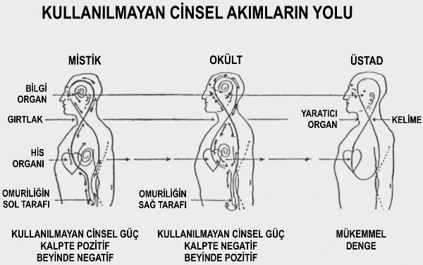

1462) Ne damıtılmış suda, ne yağmur suyunda ve ne de kar ve doluda (çatılardan toplananlar hariç) kesinlikle yersel madde yoktur. Fakat çeşme suyuyla yapılan kahve, çay veya çorba, ne kadar uzun kaynatılırsa kaynatılsın yersel maddelerden arınmış olmazlar. Tam tersine ne kadar uzun kaynatılırsa, o kadar çok külle yüklenmiş olacaktır. İdrarla ilgili rahatsızlığı olanların, kesinlikle damıtılmış sudan başka su içmemeleri gerekir.
1463) Genel olarak söylenebilir ki, bedenimize aldığımız katı yiyeceklerden taze sebze ve olgun meyvelerin, en yüksek oranda besleyici madde ve en düşük oranda yersel madde içerdiği söylenebilir.
1464) Herkes için değil, daha yüksek bir yaşama tâlip olanlar için yazdığımızdan, aynı zamanda denilebilir ki, mümkünse hayvansal yiyeceklerden tümüyle kaçınılmalıdır. Öldüren hiç kimse, kutsallık yolunda çok ilerilere gidemez. Hatta et yediğimizde, onu öldürenin yaptığından daha kötü bir eylem yapmış oluruz, zira kendimizi öldürme eylemi işlemekten koruyarak o eylemin meyvalarını yemekle bir hemcinsimizi, ekonomik zorunluluktan dolayı tüm zamanını öldürme eylemine vermeye zorlamış ve onun, bir dereceye kadar acımasız-
laşmasına sebep oluruz. Öyle ki Amerikan yasaları, can almaya artık alışkın olduklarından dolayı bu kişilerin, idamla cezalandırılabilecek suçlarda jüri üyesi olarak görev yapmalarını yasaklamaktadır (1909).
1465) Aydınlanmış kişi bilir ki, hayvanlar onun, kendisinden daha küçük kardeşleridirler ve Jüpiter Evresi’nde insan olacaklardır. Biz onlara, tıpkı Ay Evresi’nde bir zamanlar insan olan Meleklerin şimdi bize yardım ettikleri gibi yardım etmeliyiz. Yüksek ideallere tâlip olan bir kişi için öldürmek, şahsen veya vekâleten kesinlikle sözkonusu olamaz.
1466) Hayvanlardan elde edilen süt, peynir ve tereyağı gibi çeşitli çok önemli besin ürünleri tüketilebilirler. Zira bu ürünler, yaşam süreçlerinin sonuçlarıdır ve onları besine çevirmek için, o hayvana bir trajedi yaşatmak gerekmez. Okült öğrenci için önemli bir besin olan süt, çok önemsiz bir miktarda yersel madde içerir ve vücut üzerinde, başka hiçbir besin maddesinin olmadığı kadar büyük bir etkiye sahiptir.
1467) Ay Evresi boyunca insan, Doğa’nın sütüyle beslendi. Bu evrensel besin, onun tarafından alındı ve süt tüketimi onun, Kozmik güçlerle bağlantıya geçmesini ve başkalarına şifa vermesini sağladı.
1468) Genelde şeker veya başka bir tatlandırıcı maddenin, özellikle dişlerin çürümesine ve diş ağrılarına sebep olduğu için sağlığa zararlı olduğu zannedilir. Bu, sadece belli koşullar altında doğrudur. Şeker, safra kesesi rahatsızlıkları ve diyabet (şeker hastalığı) gibi belirli hastalıklarda zararlıdır. O, insan bir şekerleme olarak ağızda uzun süre tuttuğunda zarar verir. Fakat onu sağlıklı bir insan ölçülü oranda yerse ve yediği miktarı, midesinin o miktara alışacağı şekilde yavaş yavaş arttırırsa, çok besleyicidir. Zencilerin sağlığı, şeker kamışının hasat zamanında ağır işe rağmen belirgin ölçüde düzelir. Bu, onların şeker kamışı suyuna olan düşkünlüklerine bağlanmaktadır. Aynı şey, bu bölgede yaşayan ve şeker kamışı atıklarını çok seven atlar, inekler ve diğer hayvanlar için de geçerlidir. Hayvanlar hasat zamanında şişmanlamakta ve tüyleri parlaklaşmaktadır. Birkaç hafta boyunca kaynatılmış havuçla beslenen atlar, havuçta bulunan sakarin sebebiyle ipek gibi tüylere sahip olmaktadırlar. Şeker, besleyici ve yararlı bir besindir ve herhangi bir kül içermez.
1469) Meyveler ideal besinlerdir. Onlar aslında insanlar ve hayvanlar tarafından yenilmek üzere ağaçların geliştirdiği araçlardır. Böylelikle ağaçların tohumu uzaklara yayılmış olur. Benzer amaçla çiçekler de arıları kendilerine çekmektedirler.
1470) Taze meyve, en iyi ve en saf türden suyu içerir. Bu su, organizmaya mükemmel bir şekilde nufüz etme yeteneğine sahiptir. Üzüm suyu özellikle olağanüstü bir çözücüdür. O, kanı inceltir ve kurumuş ve tıkanmış kılcal damar yollarını açar. Tabii eğer bu kuruma ve tıkanma süreci çok ilerlememişse. Fermente edilmemiş üzümsuyu tedavisi ile çökük gözlere, kırışık bir deriye ve kötü bir ten rengine sahip olan insanlar dolgun, al yanaklı ve canlı olmaktadırlar. Artan geçirgenlik rûhun kendisini daha serbest ifade etmesine ve yenilenmiş enerjiyle etkin olmasına imkân vermektedir. Son sütun hariç tüm verileri Amerikan Tarım Dairesi tarafından yayımlanan verilerden alınmış olan ve aşağıda yeralan tablo öğrenciye, çeşitli faaliyetler için ne kadar yemenin gerekli olduğu hakkında bir fikir verecektir. Tablo aynı zamanda belirtilen çeşitli yiyeceklerin bileşenlerini de göstermektedir.
1471) Sırf fiziksel bakış açısından ele alırsak bedeni, yakıtı yiyecek olan kimyasal bir fırın gibi düşünebiliriz. Beden ne kadar çalıştırılıyorsa o kadar çok da yakıta ihtiyacı vardır. Beslenme biçimi kendisini yıllarca iyi beslemiş bir insanın, kendisi için en iyi beslenme biçiminin ne olduğuna dikkat etmeksizin eski beslenme biçimini bırakarak başka bir beslenme biçimi edinmesi aptalca olurdu. Sıklıkla et yiyen insanlar et yemekten men edilirlerse şüphesiz ki aralarından pek çoğunun sağlığına zarar gelir. Burada tek güvenli yol, denemeler yapmak, meseleyi önce temelden incelemek ve ayırdetme yeteneğini iyi kullanmaktır. Bu konuda hiçbir sabit kural yoktur ve beslenme biçimi, diğer bütün tipik özellikler gibi kişiden kişiye değişir. Yapılabilecek tek şey, besin değerleri tablosu vermek ve herbir kimyasal elementin genel etkisini anlatmaktır. Bu, tâlip olan kişinin kendi metodunu bulmasına yardım edecektir.
1472) Bir insanın görünüşünün, onun sağlık durumu hakkındaki yargımızı etkilemesine izin de vermemeliyiz. Sağlıklı bir kişinin nasıl görünmesi gerektiğine dair kabul görmüş, belirli genel fikirler vardır, ancak bu şekilde bir yargıya varmak için geçerli bir sebep yoktur. Al yanaklar bir insanda sağlıklı oluşun işareti olabileceği gibi bir başka insanda hastalığa işaret edebilir. Bir insanın sağlık durumunu bilebileceğimiz genel kural yoktur. Görünüş değil, bireyin kendi hissettiği rahatlık ve mutluluk duygusu onun sağlıklı olduğuna işaret eder.
1473) Burada verilen yiyecek tablosu, beş kimyasal bileşenle ilgilidir.
Su, büyük çözücüdür.
1474) Azot veya protein, etin ana inşa edicisidir, ancak bir miktar yersel madde içerir.
1475) Karbonhidratlar veya şekerler de ana güç üreticileridirler.
1476) Yağlar ısı üreticileridirler ve depolanan gücün saklayıcılarıdırlar.
1477) Kül, mineraldir, yerseldir ve organizmayı tıkar. Kemik oluşumu için ondan yeterince vücudumuza alamamamız durumunda korkmamıza gerek yoktur. Tam tersine ondan vücudumuza olabildiğince az almamız konusunda hep dikkatli olmalıyız.
1478) Kalori, basit ısı birimidir ve tablo, pazara getirilen herbir kalemin içerdiği kalori miktarını gösterir. Örneğin bir pound (yaklaşık 480 gr) Brezilya fındığında toplam ağırlığın %49,6’sı kabuktur ve işe yaramaz. Fakat kalan %50,4’lük kısım, 1485 kalori içerir. Bu, alınan şeyin yarısının atık olduğu, diğer yarısının da belirtilen kalori değerini içerdiği anlamına gelir. Yiyeceklerimizden en yüksek oranda fayda sağlayabilmek için onların içerdiği kalori miktarına dikkat etmeliyiz. Zira günlük işlerimizi yapabilmemiz için gerekli enerjiyi yiyeceklerden alırız. Bedenimizi ayakta tutmak için farklı koşullar altında gereken günlük kalori miktarı aşağıdaki tabloda günlük olarak verilmiştir:
Çok ağır kas işindeki erkek: 5500 Kalori
Orta derecede ağır kas işindeki erkek: 4150 Kalori
Orta derecedeki kas işindeki erkek: 3400 Kalori
Orta derecedeki hafif kas işindeki erkek: 3050 Kalori
Oturarak çalışan erkek: 2700 Kalori
Hiç kas faaliyeti olmayan erkek: 2450 Kalori
Hafiften orta dereceye kadar elle çalışan kadın: 2450 Kalori
1479) Tabloya göre sahip olduğumuz en besleyici yiyeceğin çikolata olduğu ortaya çıkmaktadır. Aynı zamanda toz halindeki kakao da tüm yiyeceklerin içinde en tehlikelisidir, zira diğer ürünlerin pek çoğundan on kat ve bazılarından da üç kat daha fazla maden içerir. O, güçlü bir besin ve güçlü bir zehirdir. Zira sistemi, başka herhangi bir maddeden daha hızlı tıkar.
1480) Elbette ki, bireysel olarak kişiye en uygun beslenmeyi seçmek başlangıçta biraz çalışma gerektirecektir. Ancak bunun karşılığı, yüksek şeylerin öğrenimine ve uygulanmasına imkân veren sağlık, uzun yaşam ve bedenin özgürce kullanımı olarak alınacaktır. Bir süre sonra talip kişi, ona özel bir dikkat vermeyecek kadar konuya aşina olacaktır.
1481) Yukarıdaki tablo, her bir besinin kimyasal madde oranlarını göstermekte iken hatırlanmalıdır ki, her şey sistemde kullanım için uygun değildir. Zira beden, belli oranlardan fazla sindirim yapamaz.
1482) Sebzelerde proteinin yalnızca yaklaşık %83’ünü, yağın %90’ını ve karbonhidratların da %95’ini sindiririz.
1483) Meyvelerde ise proteinin yalnızca yaklaşık %85’ini, yağın %90’ını ve karbonhidratların da %90’ını sindiririz.
1484) Beyin, kendisi aracılığıyla bedenin hareketlerinin kontrol edildiği ve fikirlerimizin ifade edildiği birleştirici bir mekanizmadır. O, diğer tüm beden kısımlarıyla aynı maddelerden yapılmıştır. Beyinde ayrıca beyinin kendisine özgü olarak fosfor bulunur.
1485) Bunun mantıksal sonucu olarak da Ego, fosfor aracılığıyla düşünceyi ifade edebilir ve yoğun fizik bedeni etkileyebilir. Şu da bir gerçektir ki, bu maddenin oranı ve değişme miktarı, bireyin zeka durumu ve seviyesi ile orantılıdır. Ruhsal olarak zayıf insanların beyinlerinde çok az miktarda; akıllı düşünürlerde ise fazla miktarda fosfor vardır. Hayvanlar âleminde de zekâ ve bilinç derecesi, beyinde bulunan fosforla orantılıdır.
1486) Bu yüzden, bedenini zihinsel ve ruhsal çalışmada kullanmak isteyen talip kişinin, bedeninin bu amaçlar için gerekli madde ihtiyacını karşılaması büyük önem taşır. Sebze ve meyvelerin pekçoğu belirli bir oranda fosfor içerir. Ancak fosforun daha büyük oranda genelde çöpe atılan yapraklarda bulunması garip bir gerçektir. Fosfor üzüm, soğan, adaçayı, fasulye, sarımsak ve ananasta, ayrıca bir çok sebzenin yaprakları ile dallarında önemli oranda bulunur. Ayrıca rafine şekerde değil ama şeker kamışı suyunda da vardır.
1487) Aşağıdaki tablo, fosforik asidin bazı maddelerde bulunma oranını göstermektedir:
100.000 parçada bulunma sayısı
Kurutulmuş arpa: 210 parça
Fasulye: 292 parça
Şekerpancarı: 167 parça
Şekerpancarı yaprağı 690 parça
Karabuğday 170 parça
Kurutulmuş havuç 395 parça
Havuç yaprağı 963 parça
Ketentohumu 880 parça
Ketentohumu yaprağı 118 parça
Yabani havuç 111 parça
Yabani havuç yaprakları 1784 parça
Bezelye 190 parça
1488) Yukarıda verilmiş olan kanıtların özü, kısaca şu şekilde ifade edilebilir:
1) Tüm yaşam evresi boyunca beden, kesintisiz bir yoğunlaşma süreci içinde bulunmaktadır.
2) Bu süreç, yersel maddelerin, özellikle de fosfat ve kalsiyum karbonatın kan tarafından bedende depolanmasıyla oluşur. Zira bu maddeler aracılığıyla vücudun çeşitli kısımları katılaşarak kemik vb. yapıları oluşturmaktadır.
3) Bu kemiğe dönüşme olayı, damarlar, kaslar ve bedendeki diğer hareketli parçaların esnekliğini yokeder. Kanı koyulaştırır, küçük kılcal damarları tamamen tıkar. Öyle ki sıvı dolaşımı ve organizmanın faaliyeti azalır. Bu sürecin sonu da ölümdür.
4) Bu katılaşma süreci yavaşlatılabilir ve yaşam süresi, çok fazla kül içeren besin maddelerinden özenle kaçınılmasıyla, yeme ve içme için damıtılmış su kullanılmasıyla ve deri yoluyla terlemelerde sık sık banyo yapılmasıyla uzatılabilir.
1489) Bazı dinlerin neden tekrarlanan yıkanmaları dinsel faaliyet olarak emrettikleri buradan anlaşılmaktadır. Zira bu yıkanmalar yoğun bedeni temizlemekte ve sağlıklı olmaya katkıda bulunmaktadırlar. Oruç da aynı amaçla emredilmiştir. O, mide için gerekli dinlenmeyi ona bir süreliğine sağlar, atık maddeleri atması için bedene imkân tanır ve böylelikle çok sık ve çok uzun olmadığı sürece kişiyi sağlıklı kılar. Ancak genel olarak vücuda, en iyi ilaç olan uygun besin verildiğinde de bütün bunlara erişilebilir.
1490) Doktor her şeyden önce doğanın, bedeni besinle alınan zehirlerden kurtarmak için temel yöntemi olan boşaltımın düzgün olup olmadığına bakar.
1491) Sonuç olarak talip kişi, sindirimi kolay besinler seçmelidir. Zira besindeki enerji ne kadar kolay çıkarılırsa yeniden bedene besin vermek gerekmeden önce organizmanın onu vücudun yapımında kullanma süresi de o kadar uzun olacaktır. Süt hiçbir zaman bir bardak su içer gibi içilmemelidir. Zira böyle yapıldığında midede büyük bir peynir oluşturur ve de mide asitlerinin faaliyetini engeller. Süt, tıpkı çay ve kahve gibi yudum yudum içilmelidir. Ancak o zaman midede çok sayıda kolayca sindirilebilen küçük küreler halinde bulunur. Uygun kullanıldığında süt, en iyi besinlerden biridir. Turunçgiller de güçlü antiseptiklerdir ve tahıllar, özellikle de pirinç, çok etkili antitoksindir.
1492) Beden için neyin gerekli olduğunu yalnız maddi bakış açısından inceledikten sonra, aynı konuyu okült taraftan da inceleyelim ve yoğun bedenimizi tamamen içine almış olan iki görünmez bedenimizin etkilerini ele alalım.
1493) Arzu bedenin özel kalesi, daha önce de belirtildiği gibi kaslarda ve serebrospinal (beyin-omurilik) sinir sistemindedir. Büyük bir heyecan veya öfke içinde olan bir insan tarafından ortaya çıkarılan enerji, bunun kanıtıdır. Bu durumlarda tüm kas sistemi gerilmiştir. Hiçbir ağır işte kaslar, “öfkeye kapılmaya uygun” durumdaki kadar gergin değildir. O, bazen bedeni haftalarca güçsüz bırakır. Bu da, öfke kontrolüyle arzu bedenin daha iyi bir hale getirilebileceğinin kanıtıdır. Böylece arzu bedenin kontrolsüz hareketlerinden doğacak olan dertlerden yoğun bedeni korumamızı sağlar.
1494) Meseleyi okült bakış açısından ele alırsak görürüz ki, Fizik Âlemdeki tüm bilinç, arzu beden ve yaşam beden arasındaki sürekli bir savaşın sonucudur.
1495) Yaşam bedenin amacı, rahatlatmak ve inşa etmektir. Onun kendisini ifade etmedeki ana araçları kan, bezeler ve kalbi istençli bir kasa çevirmeye başladığında arzu bedenin kalesine (kas ve istençli sinir sistemlerine) giriş elde eden sempatik sinir sistemidir.
1496) Arzu bedenin amacı ise germektir. O da yaşam bedenin bölgesine istila etmiş ve dalağa sahip olmuştur. Bu sayede de akyuvarları yapmıştır. Akyuvarlar, bilimin bugün (1909) kabul ettiği gibi “organizmanın koruyucu polisleri” değil, aksine onun yokedicileridirler. Arzu beden, bu çok küçük yokedicilerin tüm bedene yayılması için kanı kullanır. Kızgınlık hissedildiğinde ve özellikle de büyük öfke anlarında onlar, atardamarların ve toplardamarların duvarlarından geçerler. Sonra da arzu bedenin güçleri saldırarak damarları şişirirler ve bedenin dokularına akyuvarların girmesi için yolu açarlar. Burada onlar, bedeni öldüren yersel madde için bölgeler oluştururlar.
1497) Aynı miktarda ve aynı çeşit besinle beslenen insanlardan sakin ve neşeli olanlar daha uzun yaşayacaklar, daha sağlıklı olmanın keyfini sürecekler ve acı çeken ve kendini kaybeden insanlardan daha aktif olacaklardır. Bu sonuncular, öncekilerden daha fazla sayıda yokedici akyuvar yapacaklar ve vücutlarına daha fazla yayacaklardır. Bir bilimadamı her iki insanın bedenlerini incelemiş olsaydı, iyi huylu kişinin bedeninde, kötü huylununkine göre çok daha az yersel madde bulacaktı.
1498) Bu yokediş sürekli devam eder ve tüm yokedicileri bertaraf etmek mümkün değildir. Böyle bir şey de amaçlanmamıştır. Eğer yaşam beden sürekli hakimiyete sahip olsaydı, sürekli bedeni inşa eder ve tüm enerjisini bu amaç için kullanırdı. Hiçbir bilinç ve düşünce de olmazdı. Arzu beden iç kısmı kontrol ettiği ve sertleştirdiği için bilinç gelişebilmektedir.
1499) Çok çok eski geçmişteki bir zamanda araçlarımız maddeleşmeye başladığında ve beden henüz tıpkı yumuşakçalar gibi yumuşak, esnek ve kemiksizdi. Fakat o zamanda da tıpkı şimdiki yumuşakçaların sahip olduğu gibi sadece donuk ve sönük bilince sahiptik. Biz gelişmeden önce bedenimizde katı kısımlara sahip olmamız gerekli oldu. Herhangi bir varlığın bilinç aşamasının, o varlığın içindeki kemik sistemiyle orantılı olduğu bir gün bulunacaktır. Ego, yarı akışkan kırmızı ilikli katı kemiklere sahip olmalıdır ki kendisini ifade etmek için kırmızı kan yuvarlarını oluşturabilsin.
1500) Bu, yoğun bedenin en yüksek gelişimidir. Bu bağlamda hayvanların en yüksek sınıfa ait olanlarının benzer bir içsel kemik sisteminin olması, ancak içlerinde oturan bir rûhun bulunmaması hiçbir anlam ifade etmez. Onlar, başka bir yaşam dalgasına aittirler.
Sindirim Yasası
1501) Sindirim yasası, herhangi bir maddenin biz ona ruh olarak galip gelip kendimize tabi kılmadan bedenimizin bir parçası olmasına izin vermez. Bu alanda faaliyet gösteren güçler, hatırlayacağımız gibi aslında, “cennete” gitmiş olan ve orada Dünya’daki kullanım için bedenler inşa etmeyi öğrenen “ölülerimizdir”. Ancak onlar, kaçınamayacakları belirli yasalara göre çalışırlar. Bedenimize aldığımız her besin parçasında yaşam vardır. Bu yaşamı sindirim süreciyle bedenimizin bir parçası kılmadan önce onu yenmeli ve kendimize tabi kılmalıyız. Aksi takdirde bedende uyum olmazdı. Her parça, tıpkı onları bağlayıcı yaşam geri çekildiğinde yaptığı gibi birbirinden bağımsız hareket ederdi. O zaman bu, bizim çürüme olarak adlandırdığımız ve sindirimin tam karşıtı olan bozunum süreci olurdu. Sindirilen parçacık ne kadar bireyselleşmiş ise onu sindirmek için o kadar fazla enerji gerekecek ve organizmaya kendisini toplaması için o kadar az zaman kalacaktır.
1502) İnsan varlığı katı madenlerden yaşayabilecek şekilde düzenlenmemiştir. Tuz gibi saf madensel bir madde yenildiğinde bedenden geçip gider ve bedende çok az kalıntı bırakır. Yine de geride kalan bu kalıntı çok zararlı bir karaktere sahiptir. İnsan için sadece madenlerden beslenmek mümkün olsaydı bu bizim için, madenlerin sabitliği ve onları yenmek ve bedenin yaşamına tabi kılmak için gereken düşük enerji sebebiyle ideal bir durum olurdu. Biz de şimdikinden çok daha seyrek ve çok daha az yeme durumunda olurduk. Laboratuvarlarımız bir gün bizi, şu anda sahip olduğumuz yiyeceklerden daha üstün ve daha taze kimyasal bir besinle besleyecektir. Yüksek bitkilerden ve onlardan daha yüksek hayvan krallığından edindiğimiz besinler, çürümelerinin hızlı olmasından dolayı mide bulandırıcıdırlar. Bu çürümeye, bileşik bütünden kaçan bireysel parçacıklar sebep olurlar.
1503) Bitki krallığı, madenlerin hemen üstünde yer alan krallıktır. O, Yerin madensel kısmını sindirebilen bir organizasyona sahiptir. İnsanlar ve hayvanlar, bitkileri sindirebilirler. Böylece kendi bedenlerini ayakta tutmak için gerekli kimyasal bileşimleri almış olurlar. Bitkilerin bilinç seviyesi, rüyasız uyku bilinci olduğu için herhangi bir direnç göstermezler. Bu parçaları sindirmek için çok az bir enerjiye ihtiyaç vardır ve çok az bir bireyselliğe sahip olduklarından onlara ruh veren yaşam, yüksek gelişime sahip formlardan edinilen yiyeceklerde olduğu gibi bedenimizden hemen kaçmaya çalışmaz. O yüzden bir meyve ve sebze beslenmesinden alınan güç, bir et beslenmesinden alınan güçten çok daha kalıcıdır. Bitkisel beslenme, diğer beslenme türlerinden göreceli olarak daha fazla enerji verir, çünkü sindiriminde daha az enerjiye ihtiyaç duyar.
1504) Hayvan bedenlerinden oluşan yiyecekler, bir bireysel arzu bedenin üzerinde çalıştığı ve nüfuz ettiği parçacıklar içerirler. Bu yüzden bu parçacıklar, bitki parçacıklarından çok daha yüksek bir dereceye kadar bireyselleşmişlerdir. Hayvanın tutku ve arzularının nüfuz ettiği bir bireysel hücre ruhu vardır. Ve de onu asimile edebilecek derecede yenebilmek için ilk anda önemli bir enerji gerekir. Yine de o hiçbir zaman, güçlü bireysel eğilimlere sahip olmayan bitki hücreleri gibi bedenin hücre devletine tamamen dahil olamaz. Bunun sonucu olarak etle beslenen kişi, vejetaryen kişiye göre daha çok ve daha sık yemek zorundadır. Üstelik et parçalarının çıkardığı iç savaş, genelde bedende büyük huzursuzluğa yolaçar. Böylece et yiyen kişi daha pasif olur ve dayanıklılığı da vejetaryen kişiden daha azdır. Her iki yolun taraftarları arasındaki tüm tartışmalarda bu ispatlanmıştır.
1505) Otobur hayvanların eti, besin olarak görece kısa süreli olsa da, hücreleri daha da bireyselleşmiş etobur hayvanların etini yediğimizde onu çok miktarda tüketmek zorunda kalırdık. Yemek, zamanımızın en büyük kısmını alırdı ve buna rağmen hep zayıf ve aç olurduk. Zayıflıkları ve açlıklarıyla bilinen kurt ve akbaba bunun ispatıdırlar. Yamyamlar insan eti yer (1909), fakat bunu uzun aralıklarla ve zevk olarak yaparlar. Yamyamlar, açlıkları ile bilinmelerine karşın, hep sadece et yemediği için insanın eti, etobur bir hayvanın eti gibi değildir.
1506) Eğer otoburun etinde, bitkilerde iyi olanın özü bulunmuş olsaydı, mantıken etoburun etinin tüm besinlerin en iyisi olması gerekirdi. Kurt ve akbaba eti böylece en âlâ yiyecek olurdu. Ancak biliyoruz ki durum bunun tam tersidir. Ne kadar çok bitki krallığından beslenirsek besinden o kadar fazla enerji alabiliriz. Eğer tersi olsaydı etobur hayvanların eti, çok aranan bir et olurdu. Fakat doğada çok nadir olarak “köpek köpeği yer”.
Yaşamak ve Yaşatmak
1507) Okült ilmin ilk yasası, “öldürmemelisin”dir ve bu yasa yüksek yaşam talipleri için en büyük öneme sahip olmalıdır. Biz bir toz parçacığını bile yaratamayız. Peki nasıl olur da en küçük bir formu bile yoketme hakkımız olabilir? Bütün Formlar, Bir Olan Yaşamın, yani Tanrı’nın Yaşamının bir ifadesidirler. Bizim, Yaşamın, onun aracılığıyla deneyimler topladığı bir Formu yoketmeye ve Yaşamı, kendisini yeni araç yapmaya zorlamaya hakkımız yoktur.
1508) Ella Wheeler Wilcox, bu okült ilkeyi bütün çok ileri ruhların merhametiyle şu güzel sözleri söyleyerek savunmaktadır:
Ben sessizliğin sesiyim
Benden konuşsun dilsiz
Sağır Dünya’nın kulağına
Duyuncaya ve
Tarifsiz acıları kavrayıncaya kadar
Aynı güç serçeyi biçimlendirdi
O şekillendiren adam, kral
Bir ruh kıvılcımı verdi
Her şeyin Tanrısı
Hayvana ve havadaki kuşa
Ve ben kardeşimin koruyucusuyum
Ve onun savaşını vereceğim
Dünya’ya bunu bağıracağım
Ve onu hiç rahat bırakmayacağım
Dünya şeyleri doğru yapana kadar
1509) Bazen, sebze ve meyve yenilince de yaşamın yokedildiği iddia edilir. Bu ifade gerçeklerin tamamen yanlış anlaşılmasına dayanmaktadır. Meyve olgunlaştığında tohuma rahim olma görevini yerine getirmiş olur. Eğer yenilmezse çürüyecek ve boşa gidecektir. Hatta meyve, hayvan ve insan krallıklarına yemek olarak hizmet vermek için tasarlanmıştır; böylelikle o, tohumunun saçılarak verimli topraklarda büyüme fırsatına sahip olmasını sağlar. Ayrıca o, tıpkı yeniden bedenlenen Ego’nun tohum atomuna ve Ego’nun yaşam bedenin rahmine sahip olmayan insan yumurtası ve spermi gibi kendiliğinden yaşamdan yoksundur. Fakat ona küvöz veya toprağın uygun koşulları sağlanırsa grup rûhunun yaşamı onun içine akacak ve kendisine verilen yoğun bir beden yapma fırsatını kaçırmayacaktır. Eğer yumurta veya tohum pişirilir, kırılır veya yaşam için gerekli koşullar kendisine verilmezse fırsat kaçırılmıştır. Ancak hepsi budur.
1510) Evrim yolculuğumuzun şimdiki aşamasında her insan doğuştan bilmektedir ki, öldürmek kötüdür. İnsan hayvanları, açgözlülüğü ve bencilce çıkarlarının kendisini onların haklarına körleştir-
mediği her durumda sever ve korur. Yasa bir kedi veya bir köpeği bile vahşi zulüm karşısında korumaktadır. Hayvanlara karşı zulümlerimizin en vahşisi olan “spor” haricindeki hayvan zulümlerinde onların öldürülmeleri veya öldürmeye zorlanmaları sadece para içindir. “Spora” düşkün olanlar, çaresiz hayvanları yalnızca avcının yiğitliğine ilişkin yanlış bir fikre sahip olmaları sebebiyle vurmaktadırlar. Normalde akıllı ve iyi görünen insanların bir süreliğine diğer tüm iyi içgüdülerini unutarak nasıl kana susamış vahşiliğe döndüklerini ve sadece kan dökme zevki ve yoketme sevinciyle öldürdüklerini anlamak zordur. Bunun, en aşağı hayvansal içgüdülere dönüş olduğu ve güçlü bir ulusun normalde insancıl ve saygıdeğer lideri tarafından yapılsa bile hiçbir şekilde “erkekçe” olan bir şeyle en uzaktan bile karşılaştırılamayacağı kesindir.
1511) İnsana, zayıfın arkadaşı ve koruyucusu olma giysisinden daha güzel ne yakışırdı? New York şehrindeki Central Park’ı, orada bulunan ve kimsenin kendilerine saldırmayacağını bilmenin güveni içinde oradan oraya koşuşan yüzlerce sincabı sevmek, okşamak ve beslemek için kim ziyaret etmek istemez? Ve sincaplar için asılmış şu levhaya kim memnun olmaz: “Sincapları avlayan köpekler vurulacaktır”. Bu, köpeklere karşı sert bir uygulamadır, ancak zayıfların korunması gerektiği duygusunun büyüdüğünün bir kanıtıdır. Levhada sincapların insanlardan zarar görme olasılığına değinilmemiştir, çünkü böyle bir şey onlar için düşünülemez bile. Küçük hayvanların, kimsenin kendisine zarar vermeyeceğine dair insan türüne olan güveninin etkisi bu kadar kuvvetlidir.
Efendi’nin Duası
1512) İnsani ilerlemeye olan ruhsal yardım incelememize dönersek, Efendi’nin Duası, insanın tüm araçlarının yükseltilmesi ve arındırılması için soyut ve cebirsel bir formül olarak düşünülebilir. Bu duada yoğun bedenin ihtiyaçları için şu kelimeler söylenmektedir: “Bize bugün günlük ekmeğimizi ver!”
1513) Yaşam bedenin ihtiyaçlarıyla ilgili olarak ise şöyle denilmektedir: “Bize karşı suç işleyenlerin suçlarını bağışladığımız gibi bizim suçlarımızı bağışla!”
1514) Yaşam beden, hafızanın bulunduğu yerdir. Onda yaşamımızın iyi veya kötü tüm geçmiş olaylarının bilinçaltı kayıtları depolanır. Bize yapılmış tüm kötülükler, tüm iyilikler ve bizim yaptığımız ve bize yapılan tüm iyilikler burada yeralır. Hatırlayalım ki, yaşam kaydı resimlerden oluşur ve bu resimler, ölüm esnasında yoğun bedeni terk ederken belirttiğimiz kayıtlardan alınır. Ölümden sonraki varoluşta yaşanan tüm acılar, bu resimlerin bize gösterdiği olayların sonuçlarıdır.
1515) Eğer sürekli dua ederek başkalarına yaptığımız haksızlık bağışlandığında, yaptığımız haksızlığı olabildiğince telafi etmeye çalıştığımızda, bize haksızlık edenleri bağışlayarak yaşam bedenimizi arındırdığımızda ve tüm kötü duygulardan kurtulduğumuzda, ölümden sonraki büyük sefaletten kendimizi kurtarmış oluruz. Ayrıca da kendimizi kısmen yaşam bedenin arzu beden üzerindeki zaferine bağlı olan Evrensel Kardeşlik için hazırlamış oluruz. Hafıza formunda arzu beden, yaşam bedene intikam düşüncelerini sokar. Günlük yaşamın çeşitli sıkıntıları ortasında kişinin soğukkanlılığını muhafaza etmesi onun böyle bir zafere ulaştığını gösterir. Bu yüzden talip kişi, her iki araçla çalıştığından kendi tabiatını kontrol etmeyi öğrenmelidir. Efendi’nin Duası aynı zamanda bunu da içerir. Başkalarını incittiğimizi gördüğümüzde etrafımıza bakar ve bunun nedenini görmeye çalışırız. Kendi kontrolünü kaybetmek bu nedenlerden biridir ve o, arzu bedende başlar.
1516) İnsanların büyük çoğunluğu yoğun bedeni, onun içine girdikleri huylarıyla terk ederler. Fakat talip kişi, arzu bedenin hakimiyeti ele geçirmek için yaptığı tüm girişimleri sistematik olarak yenmelidir. Bu ise ancak yüksek ideallere yoğunlaşmakla yapılabilir. Bu yoğunlaşma yaşam bedeni güçlendirir ve kilisenin sıradan dualarından çok daha etkilidir. Okült bilge, konsantrasyonu duaya tercih eder. Zira konsantrasyon ancak soğuk ve duygusuz zihnin yardımıyla gerçekleştirilebilir. Halbuki dua, duygu tarafından belirlenir. Ancak kendini saf ve bencilce olmayan bir şekilde yüksek ideallere adama tarafından yönlendirildiğinde dua, soğuk konsantrasyondan çok daha üstündür. Dua hiçbir zaman soğuk olamaz, zira o, mistik kişinin gönlünden taşar ve Sevgi’nin kanatları onu Tanrı’ya kadar taşır.
1517) Arzu bedenin duası şudur: “Bizi yoldan saptırma!” Arzu insanoğlunun büyük ayartıcısıdır. O, bütün eylemlerin büyük dürtüsüdür ve eylemler, ruhun amaçlarına hizmet ettiği sürece iyidir de. Fakat arzu, doğayı yozlaştıran alçaltıcı bir şey içinse, o zaman bizim saptırılmamamız için ettiğimiz bu dua gerçekten yerindedir.
1518) Sevgi, Varlık, Güç ve Şöhret! Bunlar insan eyleminin dört büyük dürtüleridir. Bunlardan birine veya birkaçına olan istek, insanın yaptığı veya yapılmamış bıraktığı her şeyin temel dürtüsüdür. İnsanlığın büyük Liderleri onları bize bilgece dürtüler olarak vermişlerdir ki, insan onlarla öğrensin ve deneyim kazanabilsin. Onlar gereklidirler ve talip kişi onları eylem dürtüleri olarak emniyetle kullanmaya devam edebilir, fakat onları daha yüksek bir şeye dönüştürmelidir. Kişi, başka bir bedene sahip olmayı arayan bencilce sevgiyi ve aynı şekilde sınırlı ve kişisel nedenlerden kaynaklanan tüm varlık, güç ve şöhret arzularını daha soylu isteklerle yenmelidir.
1519) Onun hasretini çekmesi gereken sevgi, yalnızca rûhun sevgisi olmalıdır. Ve bu sevgi, yüksek ya da alçak bütün varlıkları kuşatmalı ve sevgiyi alan varlığın gereksinimi oranında artmalıdır.
1520) İnsanın hemcinslerine hizmet etme fırsatlarının çok olması zenginliktir.
1521) Güç, tüm insanlığın yükseltilmesine çabalamaktır.
1522) Şöhret ancak bize, acı çekenlerin kalplerindeki acılara çabucak teselli bulabileceklerine dair iyi haberler yayabilmemizde yardımcı olan bir şeydir.
1523) Zihnin duası şöyledir: “Bizi kötülükten kurtar!” Zihnin insanın yüksek ve alçak doğası arasındaki bağlantı olduğunu söyledik. Hayvanlara, herhangi bir kısıtlama olmaksızın arzularını takip etme izni verilmiştir. Onlar için iyi ve kötü yoktur, zira bir zihne, ayırt etme yeteneğine sahip değillerdir. Öldüren ve çalan hayvanlarla ilgili kendimizi koruma yöntemi, aynı şeyleri yapan insanlarla ilgili olarak kullandığımızkinden farklıdır. Hatta zihinden yoksun bir insan varlığı bile yaptıklarından sorumlu tutulamaz. Onun, yaptığı yanlışın farkında olmadığı gerçeği kabul edilir ve de sadece bunları yapması engellenmeye çalışılır.
1524) Ancak ruhsal gözleri açıldıktan ve iyi ve kötünün bilgisini elde ettikten sonra insan, yaptıklarından sorumlu olur. Zihin bağı kişinin Yüksek Benliği ile bağlandıktan ve onun emirlerini yerine getirdikten sonra karşımıza yüksek ahlaklı bir kişi çıkar. Bunun tersi olarak da zihnin düşük arzu doğasıyla birleşmesi de kötü düşünceli kişiyi yaratır. Bu yüzden, zihnin arzu beden ve arzu bedenle ilişkili her şeyden kaynaklanan deneyimlerden kurtarılmamız için dua ederiz.
1525) Daha yüksek bir yaşamın tâlibi, yüksek ve düşük doğaların birliğini, yüksek konular üzerinde Meditasyon yaparak gerçekleştirir. Bu bağlantı, derin düşünme (tefekkür) ile daha da pekişir. Belirttiğimiz iki durumu, Rûhu tek başına Tahta yücelten Tapınma ile aşarız.
1526) Kilisenin genel kullanımı için verilen “Efendi’nin Duası”, düşük araçların gereksinimlerini ifade eden bir duayı sunmak için gerekli olan ruhsal yükselişe erişebilmede, tapınmayı birinci sıraya koyar. Üçüz rûhun birinciden başlayarak herbir görünümü tapınmada, kendisine karşılık gelen Tanrı görünümüne çıkar. Üçüz rûhun her üç görünümü de Rahmet Tahtı’nın önünde dizildiklerinde herbiri, kendi maddi sûretlerinin gereksinimlerine uygun duaları bildirirler ve zihin için kapanış duasında birleşirler.
1527) İnsan rûhu kendi kopyasına, Kutsal Rûh’a (Yehova) çıkar ve şöyle der: “İsmin kutsanmış olsun”.
1528) Yaşam rûhu kendi kopyası olan Oğul (Mesih) önünde, “senin krallığın gelsin” diyerek eğilir.
1529) Tanrısal rûh, kendi kopyası olan Baba önünde eğilir: “Senin iraden gerçekleşsin”.
1530) Sonra en yüksek olan Tanrısal Rûh, Tanrı’nın en yüksek görünümü Baba’ya, kendi sûreti olan yoğun beden için yalvarır: “Bize günlük ekmeğimizi ver.”
1531) Ondan sonraki en yüksek olan yaşam rûhu, kendi kopyası Oğul’a, düşük doğadaki sûreti için yalvarır: “Bize karşı işlenmiş olan günahları affettiğimiz gibi sen de bizim günahlarımızı affet.”
1532) Sonra da rûhun en düşük görünümü olan insan rûhu, Tanrı’nın en düşük görünümüne üçüz bedenden en yüksekteki olan arzu beden için yalvarır: “Bizi yoldan saptırma.”
1533) Son olarak insandaki üçüz rûhun üçüz görünümlerinin tümü, duaların en önemlisi olan zihin duasını söylerler: “Bizi kötülükten kurtar.”
1534) “Babamız, Sen cennettesin” girişi, yalnızca zarftaki bir adrese benzer. Kapanış olan, “Çünkü Senindir Krallık ve Güç ve Görkem sonsuza kadar, amin” kısmı Mesih tarafından verilmemiştir, fakat üçüz rûhun kapanış duası için çok uygundur. Zira Tanrı’ya doğrudan seslenme ile sona ermektedir.
1535) Şekil 16, yukarıda söylemiş olduklarımızı basit ve kolayca hatırlanabilecek şekilde göstermektedir ve farklı dualarla onlara karşılık gelen araçlar arasındaki bağlantıyı, herbir dua ile ona karşılık gelen aracı aynı renklerle gösterek belirtmektedir.
Evlenmeme Yemini
1536) Okültistlerin, seks gücünün bir yarısının beyni inşa ettiğini ifade eden iddialarının doğruluğunun bir kanıtı da seks sapığı veya seks manyağıdır. Bu kişi bir ahmak olur ve düşünmek ona zor gelir. İnsanda, normalde üreme ve nesli devam ettirme amacıyla cinsel organlar aracılığıyla kullanılan ve cinsiyete göre negatif (alıcı) veya pozitif (verici) olan bir cinsel güç bulunur. Belirttiğimiz kişinin ahmak olmasına ve düşünememesine, sadece cinsel gücü harcaması değil, ayrıca buna ek olarak beyni inşa etmesi gereken ve beynin düşünce üretmesine imkân veren gücün bir kısmını da harcaması sebep olur. Bundan da zekâ geriliği meydana gelir.
1537) Öte yandan kendisini ruhsal çalışmaya adayan kişi de, cinsel gücü üreme için kullanmak istemez. Çünkü bu kişi, ancak böylelikle cinsel gücün kendisinde bulunan ve kullanmadığı yarısını ruhsal güce dönüştürebilir.
1538) İşte bu, gelişimin belirli bir aşamasında bulunan inisiye kişinin, evlenmeme yemini etmesinin sebebidir. Bu kolay bir yemin değildir ve de ruhsal gelişime istekli her kişinin kolaylıkla yapabileceği bir şey de değildir. Yüksek yaşam için henüz olgunlaşmamış birçok kişi, cahilce kendisini cinsel perhizi uyguladıkları bir yaşama bağlamıştır. Bir taraftan geri zekâlı seks manyakları topluma ve kendilerine ne kadar tehlikeli ise bunlar da diğer taraftan o kadar tehlikelidirler.
1539) İnsan evriminin şimdiki aşamasında cinsellik fonksiyonu, kendisiyle rûhların deneyim kazanabildiği bedenlerin sağlandığı bir araçtır. En doğurgan ve yaratıcı içgüdüyü sınırsızca takip edenler, en alt tabakadırlar. Bu yüzden bedenlenme amacıyla inen rûhlar için yeteneklerini, kendilerine ve diğer insanlara sürekli olarak faydalı olacak şekilde ortaya çıkarabilmelerine izin veren bir çevrede iyi araçlar bulmak zordur. Çocuklarına daha iyi koşullar sunabilecek olan varlıklıların büyük çoğunluğu da ya çok az çocuğa sahiptir, ya da hiç çocuğu yoktur. Bu, onların cinsel perhiz uygulamalarından değil, tamamen bencilce nedenlerden kaynaklanmaktadır. Bu kişiler çocuk istememektedirler, çünkü çok daha rahat ve serbest bir biçimde ve bir aile yükü olmadan sınırsızca cinsel zevklerini yaşamaktadırlar. Daha az varlıklı orta sınıf arasında da ailelerin sayıca büyümesi sınırlıdır, fakat bu sınırlılık ekonomik gerekçelerden kaynaklanır. Onlar bir ya da iki çocuğa eğitim ve diğer avantajları sunabilirler. Zenginlikleri dört veya beş çocuğa yetmez.
1540) Böylece insan, tanrısal ayrıcalığını kullanır ve doğaya karmaşa getirir. Yaşama adım atan Ego, bazen kendisine sunulan en elverişsiz şartlar altındaki fırsatı kullanmak zorundadır. Bunu yapamayan diğer Egolar, elverişli çevreler oluşana kadar beklemek zorundadırlar. Böylece eylemlerimizle birbirimizi etkileriz ve sonuçta babaların günahları oğullarından çıkar. Zira Kutsal Rûh, doğadaki yaratıcı enerjidir ve cinsel enerji, onun insandaki yansımasıdır ve onun yanlış veya kötü kullanılması, affedilmeyecek günahtır. O, bize yaratıcı gücün kutsallığını tamamen öğretene kadar araçların faaliyetini bozarak intikam alır.
1541) Yüksek yaşama tâlip olanlar, soylu bir ruhsal hayat yaşamak için kararlı bir arzuyla doludurlar ve cinsel fonksiyona korkuyla bakarlar. Zira tüm bu sefâlet, insanlığın onu kötüye kullanmasının ürünüdür. Onlar, tiksintiyle pis olarak gördükleri şeyden yüz çeviremezler ve kesinlikle onlar gibi olan insanların (araçlarını, uygun ve sağlıklı yiyeceklerle, yüksek ve iyi düşüncelerle ve saf ve ruhsal yaşamlarla iyi bir duruma getirmiş kimseler) enkarnasyon (bedenlenme) arayan varlıkların gelişimi için gerekli yoğun bedenleri üretmeye en uygun kişiler oldukları gerçeğini gözden kaçırırlar. Okült bilginler arasında bilinen bir gerçektir ki, bir ırkın çöküşünde, sırf kendileri için gerekli fizik araçları kendilerine sağlayabilecek derecede arınmış ebeveynler bulamadıkları için birçok yüksek sınıftan Ego’nun enkarnasyondan (bedenlenmeden) uzak durmalarının büyük payı vardır.
1542) Yukarıda belirtilen sebepten dolayı insanlığa olan görevlerini yerine getirmekten kaçınan insanlar güneş lekesini o kadar büyütmektedirler ki, Güneş’in kendisini unutmaktadırlar. Cinsel faaliyetin Dünyâ’nın idaresinde büyük yeri vardır. Uygun kullanıldığında Ego için bundan büyük nimet yoktur. Zira o, bu sayede insanlığın, gelişimi için ihtiyaç duyduğu temiz ve sağlıklı bedenlerin karşılanmasını sağlar. Ancak kötüye kullanıldığında da ondan daha büyük lânet yoktur. Zira o, bedenin miras bıraktığı en büyük kötülük kaynağıdır.
1543) “Hiçbir insanın kendisi için yaşamadığı” bir gerçektir. Sözlerimizle ve eylemlerimizle sürekli olarak diğerlerini etkileriz. Göre-
vimizi uygun bir şekilde yerine getirerek veya ihmal ederek yaşamı yokederiz veya destekleriz. Bu yaşam, öncelikle çevremizdekilerin, sonra bütün Dünya sâkinlerinin ve hatta daha fazlasının yaşamıdır. Ailesine, ülkesine ve insanlığa karşı görevini yerine getirmeyen hiçbir insanın yüksek yaşamı aramaya hakkı yoktur. Kişinin bencilce başka her şeyi bir kenara bırakması ve sadece kendi ruhsal ilerlemesi için yaşaması, ruhsal yaşamla hiç ilgilenmeyen kişinin davranışı kadar kınanması gereken bir davranıştır.

Şekil 17
Hayır, hatta daha da kötüdür. Zira günlük yaşamdaki vazifelerini ellerinden gelenin en iyisiyle yapmaya çalışanlar ve kendilerini, bakmakla yükümlü oldukları kişilerin refahına adayanlar, sadakatin asıl niteliğini geliştirmeye çalışmaktadır. Onlar şüphesiz ki zamanı gelene kadar ruhsal gereklilikler için uyanacakları bir noktaya kadar gelişecekler ve sonra da başka bir alanda edindikleri sadakati ruhsal alana taşıyacaklardır. Şimdiki sorumluluklarına ruhsal bir yaşam sürmek için sırtını dönmeye kararlı bir adam, yanlışlıkla kendisinden saptığı görev yoluna tekrar dönmeye kesinlikle zorlanacaktır. Bu kişi için, o dersi öğrenmeden bir kaçış mümkün değildir.
1544) Bazı Hint kabilelerinde yaşam mükemmel bir şekilde bölümlere ayrılmıştır. İlk 20 yıl, kişiyi yetiştirmek içindir. 20 yaşından 40 yaşına kadar olan süre, bir aile kurmaya harcanır. Kalan zaman da herhangi bir fiziksel endişe zihni rahatsız etmeden veya onun dikkatini dağıtmadan ruhsal gelişime adanır.
1545) İlk dönem boyunca çocuğa aile bakar. İkinci dönemde kişi, kendi ailesine ek olarak, kendilerini daha yüksek şeylere vermiş olan anne babasına da bakar. Ve yaşamının kalanında da kendisine çocukları bakarlar.
1546) Bu, çok akıllıca bir yöntem gibi görünmektedir. Ve de sâkinlerinin, beşikten mezara kadar ruhsal gelişime ihtiyaç duydukları bir ülkede oldukça tatminkârdır. Bu ihtiyaç öyle şiddetlidir ki, bu ülkenin insanları yanılgıyla en büyük sefaletler tarafından zorlanmadıkça maddi gelişimi ihmal etmişlerdir. Çocuklar sevinçle anne babalarına bakarlar, zira sıra onlara geldiğinde kendilerinin de çocukları tarafından bakılacağını ve ülkelerine ve insanlığa karşı görevlerini tamamladıktan sonra kendilerini tamamen yüksek yaşamlara adayabileceklerini bilirler. Ancak gelişimin maddi çizgilerini takip etmekte olduklarından sıradan insanların hiçbir ruhsal ihtiyaç hissetmediği Batı Dünyası’nda böyle bir yaşam biçimini uygulamak imkânsızdır.
1547) Ruhsal istek, zamanı olgunlaşana kadar gelmez ve bu istek daima, eğer yapabilirsek onu yerine getirebildiğimiz özel koşullar altında gelir. Bizi görünüşte geri bırakan engeller ve görevlere tahammül etmeliyiz. Eğer ailesine bakması kişinin, daha yüksek bir yaşama, dilediği şekilde tamamen kendisini adamasını engelliyorsa bu kişi, ailesine olan görevini ihmal etmek ve tüm zamanını ve enerjisini ruhsal amaçlar için kullanmak hakkına kesinlikle sahip değildir. Bu istekleri, aileye karşı olan göreve engel olmadan yerine getirmeye gayret edilmelidir.
1548) Bir başkasıyla evli olan bir kişide eşsiz bir yaşam sürme arzusu meydana gelirse bu kişi, evliliğin gerektirdiği görevleri unutmamalıdır. Böyle bir durumda görevini uygun bir şekilde yerine getirmekten kaçmaya çalışmak ve evliliği bırakmak çok yanlıştır. Fakat cinsel birleşmeye gelince, daha yüksek yaşama tâlip olanlar için, sıradan erkek veya kadınlardan farklı bir ölçü vardır.
1549) İnsanların büyük çoğunluğu evliliği, cinsel arzunun doyurulması için sınırsız bir izin olarak görürler. Yasal açıdan bu doğru olabilir, fakat insan yapımı hiçbir yasa ve hiçbir gelenek, bu meselede bir hüküm verme hakkına sahip değildir. Okült ilim, cinsel fonksiyonun asla duyuların tatmini için kullanılmaması, yalnızca çocuk yapmak için kullanılmasını öğretir. Bu yüzden daha yüksek yaşama tâlip olan kişinin, eşiyle de olsa cinsel ilişkiyi reddetmeye hakkı vardır. Ancak çocuk yapmak için cinsel birleşmede durum başkadır. Yalnız bunun için her iki eşin de fizik, etik ve ruhsal yönden sağlıklı olmaları zorunludur. Aksi takdirde bu birleşme, zayıf veya bozulmuş bir bedenin meydana gelmesiyle sonuçlanabilir.
1550) Her kişi kendi bedeninin sahibidir ve kendi bedenini zayıf iradeyle bir başkasına bırakması ile sonuçlanan her kötüye kullanmadan Sebep ve Sonuç Yasası’na karşı sorumludur.
1551) Yukarıda sözü edilenlerin ışığında ve okült ilmin bakış açısından bakarak şunu söyleyebiliriz: Sağlıklarının ve imkânlarının elverdiği oranda olabildiğince çok varlık için araç (beden) yapmak, bedensel ve ruhsal olarak sağlıklı tüm insanlar için hem bir görev ve hem de (fırsata şükrederek yapılması gereken) bir nimettir. Daha önce de belirtildiği gibi bu açıdan özellikle daha yüksek yaşama tâlip olanlar bunu yapmakla yükümlüdür, zira temiz yaşamları bedenlerine de işlemiştir. Bu yüzden onlar, temiz araçlar yaratmaya diğer insanlardan daha uygundurlar. Onlar, bekleyen Ego’lara bedenlenme fırsatı sunarak ve onların etkilerini olabileceğinden daha erken bir dönemde göstermelerini sağlayarak yüksek ve üstün varlıkların uygun araçlar bulmalarına ve böylece insanlığa gelişiminde yardım etmelerine imkân verir.
1552) Eğer cinsel güç bu şekilde kullanılırsa bir yaşam boyunca cinsel birleşme çok az sayıda meydana gelecek ve tüm cinsel güç, ruhsal amaçlar için kullanılabilecektir. Bu gücün kullanılması değil, fakat kötüye kullanılması rahatsızlıklara yolaçar ve ruhsal hayata engel olur. Bu yüzden eşsiz yaşayamayan kişinin ruhsal yaşamı bırakması gerekli de değildir. Küçük İnisiyasyonları geçerken kişi katı bir biçimde cinsel perhiz yapmak zorunda değildir. Mutlak cinsel perhiz yemini sadece büyük İnisiyasyonlar için geçerlidir ve bundan sonra bile Mesih’in bedeninin sağlanması için olduğu gibi bir fedakârlık eylemi olarak bazen bir cinsel birleşme eylemi gerekli olabilir.
1553) Ve hatta denilebilir ki, evlilik yaşamını ölçülü bir şekilde yaşamak yerine yakıcı bir arzu altında ve sürekli olarak canlı bir şekilde cinsel arzunun tatminini düşünmek daha kötüdür. Mesih, iffetsiz düşüncelerin iffetsiz eylemler kadar ve hatta onlardan daha kötü olduklarını öğretmiştir. Çünkü düşünceler sınırsızca tekrarlanabilirler, halbuki eylemlerin tekrarlanması yasalarla sınırlıdır.
1554) Daha yüksek yaşama tâlip olan kişi, kendi düşük doğasını zaptedebildiği oranda başarılı olabilir. Ancak diğer aşırılıklardan da kaçınmalıdır.
Hipofiz ve Epifiz
1555) Beyinde bulunan ve Şekil 17’de yerleri yaklaşık olarak gösterilen ve hipofiz ve epifiz olarak adlandırılan iki küçük organ vardır. Tıp bilimi bu kanalsız salgılara ilişkin çok az şey bilmektedir. Epifiz’i de “körelmiş üçüncü göz” olarak adlandırmaktadır. Ancak ne epifiz ve ne de hipofiz körelmiş değildir. Bu, bilimadamları için çok şaşırtıcıdır, zira doğa, gereksiz hiçbir şeyi tutmaz. Tüm bedende körelen veya gelişen organlara rastlarız. Körelen organlar, insanın bir bakıma şimdiki gelişim aşamasına ulaşmak için geldiği yol boyunca bulunan kilometre taşlarıdır. Gelişen organlar ise gelecekteki gelişmeye ve iyileşmeye işaret ederler. Örneğin hayvanların kulaklarını hareket ettirmek için kullandıkları kaslar insanda da vardır, fakat körelmişlerdir ve çok az insan bu kasları kullanabilir. Kalp, gelecekteki gelişimi işaret eden organlardandır, daha önce ifade edildiği gibi o, istençli bir kas olma yolundadır.
1556) Hipofiz ve epifiz ise, zamanımızda ne körelen ve ne de gelişen, ancak uykuda bulunan başka bir organ grubuna aittirler. Uzak bir geçmişte insan, “iç” boyutlarla temas halindeyken bu organlar, “iç” boyutlara giriş araçlarıydı. Onlar, gelecekte ileriki bir aşamada aynı amaç için iş göreceklerdir. Bu organlar, istençsiz veya sempatik sinir sistemiyle bağlantıdaydılar. İnsan, iç âlemleri Ay Evresi’nde, Lemurya Çağı’nın son bölümünde ve Atlantis Çağı’nın başında görmekteydi. Resimler kendilerini insan iradesinden tamamen bağımsız olarak gösteriyorlardı. Arzu bedenin duyu merkezleri, tıpkı “Medyumların” duyu merkezleri (negatif, pasif alıcı) gibi saatin tersi yönde (kendi ekseni üzerinde saat yönünde dönen Dünya hareketinin tersi yönünde) günümüze dek döndüler. İnsanların büyük çoğunluğunda bu duyu merkezleri aktif değildir, fakat daha önce açıklandığı gibi doğru bir gelişimle saatin dönüşü yönünde harekete geçirilebilirler. Burada pozitif durugörürlük (aktif dinamik) geliştirmenin zorluğu yatmaktadır.
1557) Medyumluğun gelişimi çok daha kolaydır, çünkü bu sadece, uzak geçmişte insanın sahip olduğu ayna benzeri bir faaliyetin yeniden canlandırılmasıdır. Bu faaliyette dış dünya iradedışı olarak onun içinde yansıtılır ve sonra, yakın akraba evliliği ile tutulur. Şimdiki medyumlarda bu güç aralıklarla gider gelir. Bu da onların neden bazen “görebildiklerini” ve bazen de hiçbir sebep olmadan tamamen başarısızlığa uğradıklarını izah eder. Bazen müşterisinin güçlü isteği, onun aradığı bilgiyle temas sağlamasına izin verir. Bu durumlarda medyumlar doğru görürler. Fakat onlar her zaman dürüst değildirler. Kira ve diğer giderler ödenmek zorundadır ve (üzerinde bilinçli bir kontrole sahip olmadıkları) güçleri kendilerini yarı yolda bıraktığında bazıları hileye başvururlar ve müşterilerini memnun etmek ve onların paralarını almak için akıllarına gelen saçmalıkları söylerler. Böylece bazı zamanlarda gerçekten gördükleri şeye güvensizliğe sebep olurlar.
1558) Ruhsal görüş ve kavrayışa tâlip olan kişi, her şeyden önce özgecillik (unselfishness, bencil olmamak) kanıtlamalıdır, zira eğitilmiş durugörürün başarısız olduğu gün yoktur. O en azından yoluna gelen resimlere bağlı olan ayna benzeri bir şey değildir. O, her zaman ve her yönde araştırma ve başkalarının düşüncelerini ve planlarını okuma yeteneğine sahiptir, yeter ki dikkatini bu yola yöneltsin.
1559) Onu haketmeyen bir kişi tarafından bu gücün gelişigüzel kullanımından doğacak büyük toplumsal tehlike kolayca anlaşılamaz. Bu kişi, başkalarının en gizli düşüncelerini bile okuyabilir. Bu yüzden inisiye kişi en büyük yeminlerle, bu gücü asla kendi kişisel ilgileri için en küçük derecede bile olsun kullanmamak veya kendi acısını dindirmek için ondan yararlanmamakla mükelleftir. O istediğinde beşbin kişiyi doyurabilir, ancak kendisini doyurmak için bir taşı ekmeğe dönüştüremez. O, diğerlerini felç ve cüzzamdan kurtarabilir, ancak Evrenin Yasaları ona kendi ölümcül yaralarını iyileştirmeyi yasaklamıştır. O, ettiği mutlak özgecillik (unselfishness) yemini ile bağlı olduğundan inisiye kişi, başkalarını kurtarmasına rağmen kendisini kurtaramayacağı kuralı her zaman geçerlidir.
1560) Gerçekten vereceği bir şey olan eğitimli durugörür, hiçbir zaman kendi yeneklerini belli bir ücret karşılığı sunacağı tabela asmaz. O yardım arayan kişinin Sebep ve Sonuç Yasası altında yarattığı kadere uygun olduğu sürece ona karşılıksız olarak serbestçe verir.
1561) Eğitilmiş durugörürlük okült gerçeklerin araştırılması için kullanılır ve o, okült gerçeklerin araştırılmasında yararlı olan tek yöntemdir. Bu yüzden tâlip kişi, boş bir merak giderme isteği değil, onun yerine insanlığa yardım etmek için kutsal ve özgecil (unselfish) bir istek hissetmelidir. Böyle bir istek varolana dek bilinçli durugörürlük edinmede hiçbir ilerleme kaydedilemez.
1562) Lemurya Çağı’ndan bu yana geçmiş olan dönemlerde insanlık, iradenin kontrolü altında olan serebrospinal (beyin-omurilik) sinir sistemini inşa etti. Atlantis çağının ikinci yarısında bu sistem o kadar geliştirildi ki, Ego için yoğun bedene tam olarak egemen olmak mümkün oldu. Bu, arzu bedendeki nokta ile yoğun bedenin burun kökündeki nokta (daha önce ifade edildiği gibi) ilişkiye geçtiğinde meydana geldi. İçteki Rûh, Fizik Âlemde uyandı. Fakat buna karşılık insanlığın büyük kısmı için iç Âlemlerin bilinci kayboldu.
1563) O zamandan beri epifiz ve hipofizin serebro-spinal sinir sistemi ile olan bağlantısı yavaş yavaş inşa edildi ve günümüzde bu bağlantı neredeyse tamamlanmıştır.
1564) İç Âlemlerle teması tekrar kazanmak için artık gereken tek şey, epifiz ve hipofizi tekrar uyandırmaktır. Bu gerçekleştirildiğinde insan, yüksek âlemlerdeki algılama yetisine yeniden sahip olacaktır. Ancak bu, öncekinden çok daha büyük bir oranda gerçekleşecektir, zira bu defa o, istençli sinir sistemi ile bağlantıda olacak ve bu yüzden kendi İrade’sinin kontrolü altında meydana gelecektir. Bu içsel algılama yetisi aracılığıyla ona, tüm bilgi yolları açılacaktır. O, kendisiyle karşılaştırıldığında diğer tüm araştırma yöntemlerinin çocuk oyuncağı gibi kaldığı bir bilgi edinme yöntemine sahip olacaktır.
1565) Bu organların uyandırılması, şimdi bütün insanlara anlatılabileceği kadar anlatacağımız Ezoterik Eğitimle gerçekleştirilir.
Ezoterik Eğitim
1566) İnsanların çoğunluğunda cinsel gücün, mantıklı olarak yaratıcı organlar tarafından kullanılması gereken kısmı, duyuların tatmini için harcanır. Bu yüzden Şekil 17’de gösterildiği gibi böyle insanlarda, yükselen akımdan çok az miktarda vardır.
1567) Daha yüksek yaşamlara tâlip olan kişi bu aşırılıkları gitgide daha fazla zaptetmeye başladığında ve dikkatini ruhsal düşüncelere ve çabalara ayırdığında, kullanılmayan cinsel gücün ondaki yükselişi eğitimli bir durugörür tarafından görülebilir. Bu güç, Şekil 17’de oklarla gösterilmiş olan yol boyunca hep daha fazla miktarda akar ve kalbi ve gırtlağı geçer veya belkemiği ve gırtlağı, ya da ikisini de geçer. Sonra da doğrudan hipofiz ve epifiz arasından burun kökündeki karanlık noktaya, en yüksek rûh olan “Sessiz Bekçi”nin oturduğu yere ulaşır.
1568) Bu akımlar genellikle, şekilde belirtilmiş olan iki akımdan birinden geçerek ötekini tamamen yok saymaz. Fakat normal olarak cinsel akımların hacminin daha büyük olan kısmı, tâlip kişinin mizacına göre iki yoldan birinden geçer. Sırf entelektüel yolları arayan kişide akım özellikle omurilik üzerinden gider ve yalnızca küçük bir kısım kalp üzerinden geçer. Bilmekten ziyade hisseden mistik kişide ise akım, kalpten geçerek yükselir.
1569) Her ikisi de anormal bir şekilde gelişirler ve herbiri tam bir mükemmelliğe ulaşmak için, ihmal ettiği gelişimi günün birinde tamamlamak zorundadır. Bu yüzden Gülhaçcıların hedefi, ana çabaları entelektüel kişilere yönelik olmasına karşın her iki grubu da doyuracak öğretiler vermektir. Zira entelektüel kişilerin buna ihtiyacı, mistik kişilerden daha fazladır.
1570) Bununla birlikte bu akım kendi kendisine, Niyagara şelalesi kadar büyük olsa ve kıyamet gününe dek aksa bile yararsızdır. Ancak bu akım, sadece zorunlu olarak oluşması gereken bir şey değil, aynı zamanda iç Âlemdeki bilinçli çalışma için bir ön şarttır. Gerçek ezoterik eğitimin başlayabilmesinden önce onun belli bir ölçüde geliştirilmesi gerekir. Böylece görülecektir ki, metafizik âlemlerin bilgisinin kendisine ilk elden verilmesi ve onun insanlığın yardımcısı olabilmesine imkân tanınması işine başlamadan önce tâlip kişi, belli bir süre ruhsal düşünceye adanmış ahlaklı bir yaşam sürmüş olmalıdır.
1571) Eğer aday kişi, ruhsal güç akımın üretilebileceği kadar yeterli bir süre boyunca böyle bir yaşam sürerse ve ezoterik dersleri almak için saygın ve vasıflı bulunuyorsa ona, hipofizi titreştirecek belli uygulamalar öğretilir. Bu titreşim hipofizin, en yakınındaki güç çizgisini etkilemesine ve onu biraz bozmasına neden olacaktır (Şekil 17). Bu da onun en yakınındaki güç çizgisini etkileyecek ve bu işlem, titreşim gücü tükenene dek devam edecektir. Bu, piyanodaki bir notaya basılmasıyla titreşimlerin, uygun akort aralıklarında bulunan diğer tellere sıçrayarak tüm bir seri üst tonun üretilmesi ile aynı süreçtir.
1572) Hipofizin titreşimlerinin yükseltilmesiyle güç çizgileri, epifize ulaşmaya yetecek kadar bozulduğunda hedefe ulaşılmıştır ve bu iki organ arasına bir köprü kurulmuş olur. Bu, Duyu Âlemi ile Arzu Âlemi arasındaki köprüdür. Bu köprü inşa edildiği andan itibaren kişi durugörür olur ve bakışını istediği yere yönlendirebilir. Katı nesneleri, hem dışarıdan ve hem de içeriden görebilir. Bu kişi için mekân ve katı madde, gözlem engelleri olmaktan çıkmıştır.
1573) O henüz eğitimli bir durugörür değildir, ancak o, iradi bir durugörür, yani istençli bir durugörürdür. İradedışı bir durugörür olan ve yalnızca kendisine gelen kimseyi veya şeyi görebilen ve en iyi durumda bu sırf negatif yetiden sadece biraz daha fazlası olan medyumun sahip olduğu yetiden çok daha farklı bir yetiye sahiptir. Ancak kendisinde bir kere bu köprünün kurulduğu kişi, iç Âlemlerle her zaman güvenli bir şekilde temastadır, bağlantıyı istediği gibi kurabilir veya kesebilir. Zamanla gözlemci hipofiz titreşimlerini kontrol etmeyi öyle bir şekilde öğrenir ki, iç Âlemlerin görmek istediği bölgesi ile bağlantı kurabilir. Yeti, tamamen onun kontrolü altındadır. Onun, bilincini Arzu Âleme yükseltmek için transa geçmesi ya da herhangi anormal bir şey yapması gerekli değildir. O basitçe görmek ister ve görür.
1574) Kitabın önceki bölümlerinde açıklandığı gibi acemi kişi, Arzu Âleminde görmeyi öğrenmelidir veya daha iyisi orada gördüklerini anlamayı öğrenmelidir. Fizik Âlemde nesneler yoğun ve katıdırlar ve göz açıp kapayıncaya kadar değişmezler. Arzu Âleminde ise en şaşırtıcı biçimde değişirler. Negatif istençdışı durugörür için burası sonsuz bir karmaşa kaynağıdır. Bir öğretmenin rehberliği altında buraya giren acemi kişide bile durum böyledir. Fakat öğretmenin verdiği dersler sayesinde öğrenci öyle bir noktaya gelir ki, Form istediği kadar ve sıklıkla değişirse değişsin o, değişime neden olan Yaşamı algılayabilir ve onu, tüm olası ve şaşırtıcı değişimlere rağmen ne ise o olarak bilir.
1575) Bir başka ve önemli bir fark daha vardır. Kişinin bir âlemde nesneleri algılamasını mümkün kılan güçle, kişinin o âleme girmesini ve o âlemde çalışmasını mümkün kılan güç aynı değildir. İstençli (iradi) durugörür, kendisine öğretilen birkaç alıştırmaya sahip olmuş olabilir ve Arzu Âleminde o, doğruyu yanlıştan ayırabiliyor olabilir, ancak pratik olarak orada parmaklıklar arkasındaki bir mahkumla aynı durumdadır. Görebilir, ancak orada çalışamaz. Bu yüzden ezoterik eğitim tâlip kişinin yalnızca içsel gözünü açmaz, fakat iç âlemlerde kendisi aracılığıyla tam bilinçli bir şekilde çalışabileceği bir araca sahip olması için uygun zamanda kendisine daha ileri alıştırmalar verilir.
İçsel Araç Nasıl Yapılır
1576) Günlük yaşamda insanların büyük çoğunluğu yemek, içmek ve cinsel tutkularını sınırsız bir şekilde doyurmak için yaşarlar ve en ufak bir tahrikte kendilerini kaybederler. Bu insanlar dıştan çok saygın olmalarına karşın yaşamlarının neredeyse her gününde bünyelerinde tam bir karmaşaya sebep olurlar. Tüm uyku süresi gündüz arzu ve yaşam bedenlere verilen hasarı onarmakla harcanır ve uykuda, herhangi bir başka iş yapmak için zaman kalmaz. Fakat kişi, daha yüksek bir ruhsal yaşam ihtiyacını duyar, cinsel gücünü ve öfkesini kontrol eder, sakin tabiatlı olmayı geliştirirse uyanık saatler boyunca araçlarda daha az tahribat meydana gelir. Sonuç olarak da hasarın uyku boyunca tamiri için daha az süre gerekir. Böylece kişinin uyuduğu saatler boyunca yoğun bedeni daha uzun sürelerde terk etmek ve iç Âlemlerde yüksek araçlar içinde çalışmak mümkün olur. Arzu beden ve zihin henüz tam olarak gelişmedikleri için bağımsız bilinç araçları olarak kullanılamazlar. Yaşam beden de yoğun bedeni terk edemez, çünkü bu ölüme sebep olur. Bu yüzden kolay hareket ettirilebilen ve tıpkı Fizik Âlem’deki yoğun beden gibi iç Âlemlerde Ego’nun gereksinimlerine göre yapılmış hareketli organize bir araç edinmek için tedbirler alınmak zorundadır.
1577) Böyle organize bir beden de yaşam bedendir. Ölüme yolaçmadan onu yoğun bedenden çözme imkânı bulunsa sorun halledilmiş olurdu. Ayrıca yaşam beden, hafızanın bulunduğu yerdir. Ve hafıza olmadan metafizik deneyimlerin, onlardan tam fayda sağlayabilmek için anısını bizim fizik bilincimize getirmek mümkün olmazdı.
1578) Eski Sır Tapınaklarındaki rahiplerin, Brahminler ve Levililer gibi halkın bir kısmını kastlara ve boylara ayırdıklarını hatırlayalım. Bu şekilde İnisiyasyona hazır olacak derecede gelişmiş Egoların kullanması için bedenler hazırlıyorlardı. Bu, tıpkı Yer Evresi’nin başlangıcında tüm insanlığın arzu bedenlerinde olduğu gibi yaşam bedenin ikiye bölünmesiyle gerçekleşti. Rahip öğrencileri vücutlarından çıkardığında yaşam bedenin birinci ve ikinci eteri kapsayan bir parçasını vücutta bırakırdı. Bu parça sadece hayvansal işlevleri yerine getirmekteydi (Bunlar, sadece uyku esnasında aktif olan işlevlerdir). Bu şekilde öğrenci, yoğun bedenin duyu merkezleri ile irtibatlı olan ve algılama ile hatırlama kabiliyetine sahip bir aracı yanına almaktaydı. Bu araç hafızayı kontrol edebiliyordu, çünkü duyu algılaması ve hafıza ortamları olan ışık eter ve yansıtıcı eterden meydana gelmişti.
1579) Bu aslında yaşam bedenin, tâlip kişinin yaşamdan yaşama kendisine kalan ve Entelektüel Rûh olarak ölümsüzleştirdiği parçasıdır.
1580) Mesih geldiğinden ve “dünyanın günahını aldığından” (bireyin günahını değil) ve gezegenimizin arzu bedenini arındırdığından beri tüm yoğun bedenler ile yaşam bedenler arasındaki bağ o kadar gevşedi ki, eğitimle yukarıda belirtildiği şekilde ayrılabilir hale geldi. Bu yüzden şimdi İnisiyasyon herkese açıktır.
1581) Arzu bedenin, Duygusal Rûhu oluşturan daha ince kısmı insanların büyük çoğunluğunda ayrılabilir durumdadır (hatta bu Mesih’in gelişinden önce de böyleydi). Araçların ince kısımlarının uyku esnasında veya konsantrasyon ve uygun formulün kullanılmasıyla herhangi bir zamanda ayırıldıklarında arzu ve yaşam bedenlerin düşük kısımları vücutta kalmaya devam ederler. Bunlar, yoğun bedendeki sırf hayvansal kısmın onarım işlemini devam ettirirler.
1582) Gördüğümüz gibi yaşam bedenin yoğun bedenden ayrılan kısmı yüksek derecede organizedir. O, yoğun bedenin tam bir kopyasıdır. Henüz hiçbir organa sahip olmayan arzu beden ve zihin, ancak yüksek derecede organlaşmış olan yoğun bedenle bağlı olduklarında kullanılabilirler. Ve de onlar, yoğun bedenden ayırıldıklarında değersiz enstrümanlardır. Bu yüzden insan, yoğun bedenden dışarı çekilmeden önce arzu bedenin duyu merkezleri uyandırılmalıdır.
1583) Günlük yaşamda Ego kendi bedenleri içerisindedir ve onun gücü dışarıya dönüktür. İnsanın tüm iradesi ve enerjisi dış Dünyâ’yı kontrol altına almaya yöneliktir. O, kendisini dış çevresinin etkilerinden kurtarma ve böylece uyanık olduğu saatlerde kendi üzerinde çalışmak için serbestlik kazanma imkânına sahip değildir. Böyle bir fırsatın doğduğu uyku esnasında yoğun beden dünyâ bilincini kaybettiği için Ego, bedenlerinin dışarısında bulunur. Eğer insanın hep kendi araçları üzerinde çalışması gerekiyorsa bu, ona dış dünya uykudaki gibi kapalı olduğunda, ancak ruhun araçların içerisinde kaldığı ve uyanık durumdaki gibi yetileri üzerinde tam hâkimiyeti bulunduğunda gerçekleşmelidir. Bu duruma erişilmeden önce ruh için içsel olarak çalışmak ve araçlarını uygun bir şekilde duyarlı hale getirmek mümkün değildir.
1584) Konsantrasyon böyle bir durumdur. Kişi konsantre olduğunda duyular yatışır ve insan, dıştan en derin uykudaki gibi bir konumdadır, ancak rûh, tam bilinçli olarak içeridedir. İnsanların çoğu en azından bir dereceye kadar kitap okumaya daldıklarında bu hâli deneyimlemişlerdir. Onlar bu durumda yazarın anlattığı olaylarda yaşarlar ve kendi çevreleri için kayıptırlar. Kendileriyle konuşulduğunda cevap vermezler. Hem seslerin ve hem de çevrelerindeki olayların farkında değillerdir. Ancak onlar okudukları şeylere tamamen uyanıktırlar. Yazarın yarattığı görünmez bir dünyada yaşamaktadırlar ve eserin farklı karakterlerinin kalp atışlarını hissederler. Ancak onlar hür değildirler, herhangi birisinin kitapla yarattığı bir yaşama bağlıdırlar.
1585) Yüksek yaşama tâlip kişi, kendi iradesiyle seçtiği herhangi bir nesne içinde veya daha iyisi sıradan herhangi bir nesne değil, kendi hayal ettiği çok basit bir nesne üzerinde yoğunlaşma yetisini geliştirir. Böylece kişi, duyularının tamamen sessiz olduğu uygun bir koşula eriştiğinde veya bir şey üzerinde tam yoğunlaşma noktasına ulaştığında düşüncesini arzu bedenin duyu merkezleri üzerinde yoğunlaştırır ve bu merkezler dönmeye başlarlar.
1586) İlk başta onların hareketleri yavaştır ve zor meydana getirilebilir. Fakat derece derece arzu bedenin duyu merkezleri yoğun bedende ve yaşam bedende kendilerine yer açarlar ve bu faaliyete uyum sağlamayı öğrenirler. Sonra bir gün uygun yaşam, yaşam bedenin yüksek ve alçak kısımları arasında gerekli olan gevşemeyi geliştirdiğinde iradenin olağanüstü bir çabası oluşur. Birçok yönde spiral biçimli bir hareket meydana gelir ve tâlip kişi kendi yoğun bedeninin dışındadır ve onu başka bir kişiymiş gibi görür. Onun hapishanesinin kapıları açılmıştır. Gelmek ve gitmek konusunda özgürdür ve içsel Âlemlerde de tıpkı Fizik Âlemdeki gibi serbestçe hareket edebilir, orada istediği gibi davranabilir ve bu âlemlerden herhangi birinde onun hizmetini isteyen herkese yardımcı olabilir.
1587) Tâlip kişi, bedenini kendi isteğiyle terk etmeyi öğrenmeden önce uyku esnasında arzu bedeninde çalışabiliyor olmalıdır. Zira bazı insanlarda yaşam bedende ayrımın gerçekleşebilmesinden önce arzu beden organize olur. Bu koşullar altında öznel (sübjektif) deneyimleri uyanık bilince taşımak imkânsızdır. Fakat genelde gelişimin ilk aşaması olarak fark edilecektir ki, tüm karışık rüyalar son bulacaktır. Ardından bir süre sonra rüyalar daha canlı ve tamamen mantıklı olacaklardır. Tâlip kişi rüyasında (kendisi uyanıkken bildiği veya bilmediği) çeşitli yerlerde ve mekânlarda bulunduğunu ve sanki uyanıkmış gibi mantıklı davrandığını görecektir. Rüyasında gördüğü yer, onun uyandığında gidebileceği bir yerse ve gördüğü rüyadaki fiziksel ayrıntılara dikkat ederse bazen kendisi için rüyasının doğruluğuna ilişkin kanıtları uyanıkken bulmak ve gece gördüğü şeylerin doğruluğunu ertesi gün görmek mümkün olacaktır.
1588) Ardından uyku saatleri boyunca yeryüzünde istediği herhangi bir yeri gezebildiğini ve orayı, yoğun bedeniyle yapabileceğinden çok daha ayrıntılı bir şekilde araştırabileceğini görecektir. Zira arzu bedeninde o, kilitlere ve sürgülere aldırmadan her yere girebilir. Eğer kişi sebat ederse, en sonunda artık araçları arasındaki bağı çözmek için uykuyu beklemek zorunda olmadığı ve bu bağı kendi kendine bilinçli olarak çözebileceği gün gelir.
1589) Yüksek araçların serbest kalmasına yönelik özel talimatlar rastgele verilemez. Ayrım, sözcüklerdeki sabit bir formül aracılığıyla değil daha çok bir irade eylemi aracılığıyla gerçekleşir. İradenin yönlendirilme biçimi kişiye özgüdür ve bu yüzden ancak ehil bir öğretmen tarafından bu iş yapılabilir. Diğer tüm gerçek ezoterik bilgiler gibi bu da asla satılamaz, ancak öğrenciye o bilgiyi almaya kendisini hazır hale getirmesinin sonucu olarak verilir. Burada yapılabilecek tek şey, istençli durugörürlük yetisine sahip olmaya götürecek yolun ilk adımlarına işaret etmektir.
1590) Bu çalışma için en uygun zaman, günlük yaşamın üzüntüleri ve dertleri zihne girmeden önce ve sabah uyandıktan hemen sonraki zaman dilimidir. Kişi iç Âlemlerden henüz gelmiştir ve bu yüzden, sabah uyandıktan sonra günün başka herhangi bir zamanından daha kolayca tekrar iç Âlemlerle bağlantı kurması sağlanabilir. Kişi önce giyinmeyi beklememeli ve yataktan kalkmamalıdır. Bedenini tamamen gevşetmeli ve ilk uyanık haldeki düşüncesiyle alıştırmaya başlamalıdır. Gevşeme, sadece rahat bir konumda olma anlamına gelmez. Beklentinin her kası germesi mümkündür. Bu da başarıyı daha baştan engeller. Zira bu durumda arzu beden kasları tutar. O, biz zihni sakinleştirmeden önce de başka hiçbir şey yapamaz.
Konsantrasyon
1591) İlk alıştırma, kişinin düşüncelerini bir ideale yöneltmesi ve başka yere saptırtmadan orada tutmasıdır. Bu olağanüstü zor bir ödevdir, ancak daha fazla ilerlemenin mümkün olabilmesi için en azından belli bir dereceye kadar yerine getirilmelidir. Düşünce, fikirlerimize uygun resimler ve düşünce formları yaratmak için kullandığımız güçtür. O bizim ana gücümüzdür ve onun üzerinde mutlak kontrol sahibi olabilmeyi öğrenmeliyiz ki, ürettiğimiz şey, dış koşulların sebep olduğu dağınık yanılsama (ilüzyon) değil, ruh tarafından içeriden üretilen gerçek hayalgücü olsun (Şekil 1’e bakınız).
1592) Skeptikler her şeyin hayal olduğunu söylerler. Ancak önceden de söylendiği gibi telefonu bulan kişi onu hayal etmeseydi, bugün biz ne telefona ve ne de başka bir şeye sahip olabilirdik. Onun hayal ettikleri ilk başta doğru veya gerçek değildi, aksi takdirde icatlar daha başından başarılı bir şekilde fonksiyonlarını yerine getirirler ve birçok kusur ve görünüşte yararsız deneyler olmazdı. Bu deneyler neredeyse daima pratik ve yararlı bir aletin veya bir makinenin üretiminden önce yapılmaktadır. Gelişen okültistin hayalgücü de başlangıçta doğru değildir. Onu doğru kılabilmenin tek yolu günbegün kesintisiz çalışmadır. Ayrıca irade de başka her şeyi dışlayarak bir şeye, bir nesneye veya bir fikre odaklanmasını öğrenir. Düşünce, bizim kendisini boşa harcamayı alışkanlık haline getirdiğimiz büyük bir güçtür. Biz düşüncelerimize amaçsızca akıp gitme izni veririz. Bu düşünceler tıpkı suyun, bir su değirmenini döndürmeden önce şelaleden uçuruma akıp gitmesine benzer.
1593) Tüm yeryüzüne dağılan güneş ışınları yalnızca orta dereceli bir sıcaklık üretir. Fakat bu ışınların sadece birkaç tanesi bile bir büyüteç yardımıyla biraraya toplanırsa, odak noktasında ateş oluşturabilirler.
1594) Düşünce-gücü, bilgi edinmenin en güçlü aracıdır. O, bir konu üzerine yoğunlaştırıldığında yolu üzerindeki bütün engelleri yakar ve problemi çözer. Gerekli düşünce-gücü miktarına erişildiğinde insan idrakının ötesinde hiçbir şey yoktur. Onu saçıp savurduğumuz sürece düşünce-gücünün bize çok az faydası vardır. Ancak onu kullanma olgunluğuna eriştiğimizde tüm bilgi bizimdir.
1595) İnsanların sık sık şöyle bağırdıklarını duyarız: “Yüz tane şeyi bir anda düşünemem ki!”. Ancak aslında onların yaptıkları hata tam da budur ve bu, yakındıkları rahatsızlığa yolaçar. İnsanlar sürekli olarak ellerinde olandan başka yüz şeyi daha düşünürler. Her başarı, istenen hedefe sürekli konsantrasyonla sağlanır.
1596) Bu, yüksek yaşama tâlip kişi tarafından mutlaka öğrenilmelidir. Bunun başka bir yolu yoktur. İlk önceleri o, kendisini güneş altındaki konsantre olmayı kararlaştırdığı fikir dışındaki her şeyi düşünürken bulacaktır, ama bu onu yıldırmamalıdır. Zamanla duyularını yatıştırmak ve düşüncelerini sabitlemek onun için daha kolay olacaktır. Israrcılık, ısrarcılık ve daima ISRARCILIK en sonunda kazanacaktır. Fakat onsuz bir sonuç beklenemez. Alıştırmaları iki üç sabah veya hafta yapıp sonra aynı süre ihmal etmek kişiye hiçbir şey kazandırmaz. Etkili olabilmesi için onların sadakatla her sabah düzenli bir şekilde yapılması gerekir.
1597) Tâlip kişinin doğasına ve zihinsel durumuna göre herhangi bir şey seçilebilir. Ancak seçilen şey saf ve düşünceler kişiyi yükseltici olmalıdır. Bazıları bunun için Mesih’i seçeceklerdir. Diğerleri özellikle çiçekleri severler ve onlar için konsantrasyon öznesi olarak çiçekleri seçmek onlara kolay gelecektir. Konsantrasyon için seçilen şeyin çok az önemi vardır. Ne türden olursa olsun, onu gerçek hayatta olduğu durumuyla tüm detaylarına kadar kafamızda canlandırmalıyız. Eğer konsantrasyon için Mesih’i seçmişsek gerçek bir Mesih’i canlı özellikleri, bakıştaki yaşam ve taştan ve ölü olmayan bir ifade ile kafamızda canlandırmalıyız. Bir heykel değil, canlı bir ideal inşa etmeliyiz. Eğer bir çiçeği seçmişsek hayalimizde tohumu almalıyız, onu toprağa gömmeliyiz ve zihnimizi onun üzerinde sürekli olarak sabitlemeliyiz. Yakında onun yarıldığını ve Yer’in içine spiral şeklinde köklerini uzattığını göreceğiz. Köklerin ana damarlarından ayrılan ve tüm yönlere budaklanan onbinlerce kökçük oluşumunu izleyeceğiz. Sonra gövde yukarıya doğru filizlenmeye başlayacak. Yeryüzünü yarıp çıkacak ve küçücük yeşil bir sap olarak günyüzüne çıkacaktır. Bitki büyümektedir. Sonra bir filiz görürüz, küçük bir dal, ana gövdeden filizlenir ve büyür. Bir başka filiz ve bir dal ortaya çıkar. Sonunda dallardan, uçlarında tomurcuklarla küçük yaprak sapları görünür. Kısa süre sonra bir sürü yaprak oluşur. Sonra tepede bir gonca meydana gelir ve çatlayıncaya kadar ve yeşilin altında gülün kırmızı yaprakları görününceye dek büyür. Sonra gül, duyularımızla tamamen algıladığımız çok güzel bir koku yayarak havada açılır. Bu koku, zihnin gözleri önünde güzel yaratımı hafifçe sallayan yumuşak bir yaz meltemi gibidir.
1598) Yalnızca bu şekilde açık ve eksiksiz detaylarla “kafamızda canlandırırsak” (imagine) konsantrasyon ruhu içine gireriz. O, belli belirsiz ve soluk bir kopya olmamalıdır.
1599) Hindistan’a gitmiş olan kişiler, Hint fakirlerinin kendilerine, hayretler içindeki izleyicilerin gözleri önünde ekilen ve meyveler verene dek büyütülen, sonra da o meyvelerden yedikleri bir tohum gösterdiklerinden bahsetmektedirler. Bu, öyle yoğun bir konsantrasyonla gerçekleştirilmektedir ki resim, sadece Hint fakirinin kendisine değil, aynı zamanda izleyicilere de görünür olmaktadır. Bir bilimadamları kurulu üyelerinin kendi gözleri önünde ve hilenin mümkün olmadığı koşullar altında meydana gelen harikulade şeylerin oluşmasına şahit oldukları bir olay bildirilmiştir. Ancak bu olay esnasında çekilen fotoğraflarda hiçbir şey çıkmamıştır. Işığa duyarlı fotoğraf levhalarında hiçbir iz yoktu, zira maddi somut nesneler yoktu.
1600) Tâlip kişinin oluşturduğu resimler ilk başlarda aslının belli belirsiz ve kötü kopyalarıdır. Fakat o, sonunda konsantrasyon ile Fizik Âlemdekinden daha gerçek ve canlı bir resmi hayalinde yapabilir.
1601) Tâlip kişi böyle resimler biçimlendirebilmeyi başardığında ve zihnini başarıyla bu üretilmiş resimler üzerinde tutabildiğinde resmi birden bırakmayı denemeli ve zihnini her türlü düşünceden uzak tutarak boşluğa şimdi neyin gireceğini beklemelidir.
1602) Uzun bir süre hiçbir şey görünmeyebilir ve tâlip kişi kendisini dikkatle, kendi vizyonlarını oluşturmaktan korumalıdır. Ve o, sadakat ve sabırla her sabah alıştırma yaparsa, resmi hayalinden bıraktığı anda etrafındaki Arzu Âlem’in onun içsel gözüne bir anda açıldığı bir zaman gelecektir. Başlangıçta bu, bir anlık görme olabilir, fakat daha sonra istenildiğinde gelecek olanın habercisidir.
Meditasyon
1603) Tâlip kişi bir süre konsantrasyon alıştırması yaptığında ve zihnini herhangi basit bir şeye odaklamayı öğrendiğinde hayalgücü aracılığıyla canlı bir düşünce formu inşa eder. Bundan sonra o, meditasyon veya derin düşünme sayesinde bu şekilde yaratılmış nesne hakkında her şeyi öğrenecektir.
1604) Tâlip kişi, konsantrasyonla Mesih’in görüntüsünü hayalinde canlandırdığında artık meditasyonla O’nun yaşamındaki olayları, acıları ve dirilişini hafızaya geri çağırmak çok kolaydır. Ayrıca kişi meditasyonla çok şey öğrenebilir. Kimsenin önceden rüyasında bile görmediği bilgiler kişinin rûhuna muhteşem bir ışıkla sel gibi akacaktır. Ancak kişinin alıştırma için kendisini hiç ilgilendirmeyen ve kendisinde herhangi olağanüstü bir şey uyandırmayan nesneleri, örneğin bir kibrit çöpünü veya sıradan bir masayı seçmesi daha iyidir.
1605) Masanın görüntüsü zihinde açıkça biçimlendirildiğinde onun hangi ağaçtan olduğunu ve nereden geldiğini düşün! Onun küçük bir tohum halinde kesilmiş bir ağaçtan orman toprağına düştüğü zamana git! Yıldan yıla büyümesini, kış aylarında karla kaplı olmasını ve yaz güneşiyle ısınmasını ve sürekli olarak göğe doğru büyümesini ve bu arada köklerinin yeraltında sürekli yayılmasını izle. İlk başlarda o, rüzgârla sallanan hassas bir fidandır. Sonra genç bir ağaç olarak havaya ve günışığına doğru hep daha yükseğe uzar. Yıllar geçtikçe gövdesinin kalınlığı artar. Sonunda bir gün balta ve testeresiyle oduncu gelir. Kış güneşi balta ve testerenin üzerlerine yansımaktadır. Ağacımız kesilir ve dalları budanır. Sadece gövdesi kalır. Bu gövde kütükler halinde kesilir ve nehir kıyısına kadar donmuş yollar boyunca taşınır. İlkbaharda eriyen karların akıntıyı yükselteceği zamana dek de burada kalır. Kütüklerden büyük bir sal yapılır, aralarında bizim ağacımızın kütükleri de vardır. Onların en küçük detaylarını bile biliriz. Binlercesi arasından bile onları hemen tanırdık. Zihnimize onları bu kadar açık kaydettik. Salla birlikte akıntıyı takip ediyoruz, geçip gittiğimiz manzarayı fark ediyoruz ve salı idare eden ve bu yüzen yüklerden yapılmış küçük barakalarda uyuyan adamlarla tanışıyoruz. En sonunda onun bir bıçkıhaneye ulaştığını ve orada doğrandığını görüyoruz. Kütükler birer birer uzun zincirlere bağlanmış kancalar tarafından yakalanıyor ve sudan çıkartılıyor. Burada kütüklerden bir tanesi geliyor, bu kütüğün en geniş yerinden masamızın üst tahtası yapılacak. O, sudan çıkartılıyor ve kütüklerin yığıldığı yere uzun kancalı adamlar tarafından yuvarlanıyor. Büyük yuvarlak testerelerin acıkmış vızıltılarını duyuyoruz. O kadar hızlı dönüyorlar ki gözlerimiz onları ancak bulanık halkalar olarak görüyorlar. Bizim kütüğümüz bir vagona konuluyor ve vagonlardan biri tarafından itilerek çelik dişlerin kendilerini yolları boyunca parçaladığı ve onları kalaslara ve tahtalara böldüğü yere geliyor. Bazı kısımlar ev inşasında kullanılmak üzere seçiliyor, ancak en iyi kısımlar mobilya fabrikalarına gönderiliyor ve buharla kurutulmanın yapıldığı bir fırına konuluyor ki bir mobilya haline getirildikten sonra boyutları küçülmesin. Sonra oradan çıkarılır ve birçok keskin bıçağa sahip büyük bir planya makinesinde düzleştirilir. Ardından farklı uzunluklarda kesilerek parçalara ayrılır ve masanın üst yüzeyini oluşturması için zamklanır. Ayaklar daha kalın parçalardan yapılır ve üst yüzeyi destekleyen çerçeveye takılır. Sonra tüm masa tekrar zımpara kağıdı ile düzleştirilir, verniklenir ve cilalanır. Böylece masa hazır hale gelir. Bundan sonra o, diğer mobilya parçaları ile birlikte onu alacağımız mağazaya getirilir. En sonunda da onun nasıl evimize getirildiğini ve yemek salonumuzda nasıl yerini aldığını takip ederiz.
1606) Böylece meditasyon aracılığıyla, bir ağacı bir mobilyaya dönüştürmek için gerekli olan çeşitli endüstri dallarına aşina olduk. Tüm makineleri ve insanları gördük ve çeşitli yerlerin özelliklerini inceledik. Hatta bu ağacın küçücük bir tohumdan büyüdüğü yaşam sürecini takip ettik ve oldukça sıradan şeylerin de büyük ve olağanüstü enteresan bir hikâyesi olabileceğini öğrendik. Bir toplu iğne, kendisiyle gaz lâmbalarını yaktığımız kibrit, gazın kendisi ve gazın yakıldığı yer. Bunların hepsinin öğrenilmeye değer ilginç hikâyeleri vardır.
Gözlem
1607) İstekli kişiye uğraşılarında yardım edecek en önemli şeylerden biri de gözlemdir. İnsanların pekçoğu körlüğe uğramış gibi yaşamdan geçip giderler. Bunlar için, “gözleri vardır görmezler, (...) kulakları vardır duymazlar” sözü kelimesi kelimesine doğrudur. İnsanların çoğunluğu üzerinde acınacak derecede bir gözlem eksikliği vardır.
1608) İnsanların pek çoğu bir dereceye kadar mazur görülebilir, çünkü görme yetenekleri normal değildir. Şehir yaşamı gözlere çok büyük zararlar vermiştir. Şehir dışlarında çocuk, göz kaslarını tam ölçüde kullanmayı öğrenir. Bu kasları, görmek istedikleri nesnenin uzaklığına bağlı olarak, açık arazide uzakta olmasına ya da yakında bulunmasına göre genişletip daraltırlar. Buna karşın şehir çocuğu her şeyi yakından görür. Onun göz kasları, çok uzaklardaki nesnelere bakmada nadir kullanılır. Bu yüzden bu yetenek de büyük ölçüde kaybolur. Bu da miyop (uzağı görememe) ve diğer göz rahatsızlıklarının yaygın olmasına sebebiyet verir.
1609) Yüksek yaşama tâlip olan bir kişi için etrafındaki nesneleri açık ve belirli hatlarla ve tüm detaylarıyla görebilmesi çok önemlidir. Eksik görme yeteneğine sahip bir kişi için gözlük kullanmak, yeni bir dünyanın ona açılması gibidir. Bu kişi, önceki bulanıklığın yerine her şeyi keskin ve açık görür. İki farklı odağa sahip camların olması gereken durumlarda kişi, yakın ve uzak görme için sık sık birinin çıkarılıp diğerinin takılmasını gerektiren iki farklı gözlük taşımamalıdır. Bu durum, sadece gözlüklerin birinin çıkarılıp diğerinin çıkartılmasının vereceği bıkkınlıktan değil, aynı zamanda evden çıkarken gözlüklerden birisinin kolayca unutulabilmesinden dolayı da dezavantajlıdır. Her iki odak, çift odak notasına sahip camları olan bir gözlükte birleştirilebilir ve kişi, etrafındaki ayrıntıların gözlemini kolaylaştırmak için bu gözlüklerden takmalıdır.
Ayırım
1610) İstekli kişi dikkatini görme yeteneğine verdiğinde sistematik olarak her şeyi ve herkesi gözlemeli, onların eylemlerinden sonuçlar çıkarmalı ve mantıklı düşünme yetisi geliştirmelidir. Mantık, Fizik Âlemdeki en iyi öğretmendir ve diğer bütün alemlerde de en güvenilir ve en kesin kılavuzdur.
1611) Gözlem metodunu uygularken daima akılda tutulmalıdır ki bu metod, eleştiri amaçlı değil, ya da en azından kötü niyetli eleştiri amaçlı değil, yalnızca olguları toplamak için kullanılmalıdır. Hataları ve onlardan kaçınma yollarını gösteren yapıcı eleştiri, ilerlemenin temelidir. Fakat mükemmelliğe erişmeyi amaçlamayan ve kötü niyetle iyiyi ve kötüyü fark gözetmeden yokeden yıkıcı eleştiri, kişinin karakterindedeki bir ülserdir ve kökü kurutulmalıdır. Dedikodu ve boş gevezelik, engeldirler. Kimse bizden karaya ak dememimizi ve yanlış hareketi görmezden gelmemizi isteyemez. Eleştiri, kişiye yardım etmek için yapılmalıdır, yoksa küçük bir leke bulduğumuz için bir hemcinsimizin karakterini lekelemek için değil. Her zaman çuvaldız ve iğne örneğini hatırlamamız ve en acımasız eleştirileri kendimize yöneltmemiz gerektiğini hatırlamalıyız. Hiçkimse, artık daha da iyi bir hale gelemeyecek kadar mükemmel değildir. Kişi ne kadar masumsa başkalarında hata bulmaya, onlara taş atmaya o kadar az yatkındır. Herhangi bir kusura dikkat çeker ve onu iyileştirme yollarını gösterirsek bunu, hiçbir kişisel duyguya sahip olmaksızın yapmalıyız. Daima her şeyde saklı olan iyiyi aramalıyız. Bu ayırt etme davranışının geliştirilmesi özellikle önemlidir.
1612) Talip kişi, ilk elden bilgiye göre belli bir süre konsantrasyon ve meditasyon uygulamaları yaptığında ve bunlarda belli bir başarı sağladığında, bir sonraki adıma geçmelidir.
1613) Konsantrasyonun, düşünceyi tek bir nesne üzerine odaklamak olduğunu gördük. O, kendisi aracılığıyla, hakkında bilgi sahibi olmayı arzu ettiğimiz formun açık, objektif ve canlı bir görüntüsünü yapma yoludur.
1614) Meditasyon, kendisi aracılığıyla, araştırdığımız nesnenin tarihini ortaya çıkarmamızı sağlayan uygulamadır. Meditasyona girerek onun, dünyayla genel olarak ilişkisine ait tabiri caizse her kanıt parçasını ortaya çıkarırız.
1615) Bu iki zihinsel alıştırma, en derin ve en mükemmel bir şekilde nesnelerle ilgilenir. Onlar kişiyi, zihinsel gelişimin daha yüksek, daha derin ve daha ince (süptil) bir aşamasına ulaştırırlar.
1616) Bu aşamanın ismi Derin Düşünme’dir (Tefekkür).
Seyir
(Contemplation)
1617) Seyirde meditasyonda olduğu gibi bilgi edinmek için düşünceye dalma veya hayalinde canlandırma yoktur. O sadece nesneyi ruhsal gözümüz önünde tutmak ve onun ruhunun bize konuşmasını sağlamaktan ibarettir. Sessiz ve gevşemiş bir şekilde bir kanapeye veya yatağa uzanırız. Pasif değil tamamen uyanık bir durumdayızdır. Uygun gelişim seviyesine erişmişsek bize muhakkak gelecek olan bilgiyi alırız. Zira nesnenin Form’u kayboluyor gibi görünür ve sadece onun çalışmakta olan yaşamını görürüz. Meditasyon bize işin Form kısmını öğretirken Seyir bize Yaşam tarafını açıklar.
1618) Bu aşamaya eriştiğimizde ve örneğin ormanda bulunan bir ağaç önümüzdeyken Form’u tamamen gözden kaybederiz ve sadece bu durumda bir grup ruhu olan Yaşam’ı görürüz. Şaşkınlıkla bulacağız ki, ağacın grup ruhu, ağaçtan beslenen çeşitli böcekleri de kapsamaktadır ve parazit ve onun evsahibi bir ve aynı grup rûhundan ortaya çıkmışlardır. Görünmez (gayb) âlemlerde ne kadar yükseğe çıkarsak ayrı ve farklı Formlar da o kadar azalır ve o kadar bütünüyle Bir Olan Yaşam ağır basar. Bu yaşam, araştırıcıya şu yüce gerçeği iletir: Sadece bu Bir Olan Yaşam, Tanrı’nın her şeyi kapsayan yaşamı vardır. Şu bir gerçektir ki, bu yaşamın içinde “yaşarız, hareket ederiz ve varlığımıza sahibiz”. Maden, bitki, hayvan ve insan, istisnasız hepsi Tanrı’nın tezahürleridirler ve bu gerçek, kardeşliğin asıl temelini oluşturur. Bu kardeşlik, atomdan Güneşe kadar her şeyi kapsar. Zira hepsi, Tanrı’dan çıkmışlardır. Okült bilgin’in, Evrensel Yaşam’ın varolan her şeye nasıl aktığını gördüğünde açıkça kavradığı gibi, sınıf ayrımları, Irk akrabalıkları, meslek toplulukları vs gibi başka bir temeli olan kardeşlik anlayışları bu temelin çok gerisinde kalırlar.
Tapınma
(Adoration)
1619) Seyir ile bu yüksekliğe erişildiğinde ve talip kişi gerçekte her şeyi kapsayan Yaşam’daki Tanrı’yı gördüğünü açıkça kavradığında atılacak bir adım daha vardır. Bu en yüksek adım, tapınmadır. Onun aracılığıyla kişi, bütün şeylerin Kaynağı ile birleşir ve bu birleşme ile, büyük Tezahür Gününün sonunda kalıcı birlik meydana gelene kadar insan tarafından edinilebilecek mümkün olan en büyük hedefe erişir.
1620) Yazarın görüşü, ne Seyir’in yüksekliklerine ve ne de son Tapınma adımına, bir öğretmenin yardımı olmadan erişilemeyeceğidir. Talip kişi, bir öğretmeni olmaması sebebiyle bu adımları atmada gecikmekten asla korkmamalıdır. Kendisine bir öğretmen aramak zorunda da değildir. Ondan talep edilen tek şey, kendisi üzerinde çalışmaya başlaması ve bu çalışmaya ciddiyetle ve ısrarla devam etmesidir. Bu şekilde o, kendi araçlarını arındıracaktır. Bu araçlar iç Âlemlerde parlamaya başlayacak ve bu, tam da hep bu durumları gözleyen öğretmenlerin dikkatini çekecektir. Bu öğretmenler, kendilerini arındırmada ciddi çabalarının karşılığı olarak yardım alma hakkını kazanmış kişilere yardım etmeye çok isteklidirler ve bundan mutlu olurlar. İnsanlık, şiddetle iç Âlemlerden çalışabilen yardımcılara ihtiyaç duymaktadır, bu yüzden “arayın, bulacaksınız”. Ancak aramak, bir mesleki öğretmenden diğerine dolaşıp durmak demek değildir. Bu anlamda “aramak”, bu karanlık Dünya’da hiçbir işe yaramaz. Biz kendimiz ışık yakmalıyız, gerçekten talip bir kişinin araçlarından sürekli olarak yayılan bir ışık. İşte bu, bizi öğretmene götürecek olan yıldızdır, daha doğrusu öğretmeni bize getirecek olan yıldızdır.
1621) Alıştırmalarda başarıya ulaşmak için gereken zaman kişiden kişiye değişir. Bu başarı, onun uygulamasına, evrimdeki aşamasına ve kader kitabındaki kaydına bağlıdır. Bu yüzden genel bir süre verilemez. Zaten hazır olan bir kısım, birkaç günde veya haftada sonuç alırken, diğerleri herhangi bir görünür bir başarıya ulaşmaksızın aylar, yıllar ve hatta tüm ömürleri boyunca çalışmak zorundadırlar. Ancak başarılar oradadır ve sadakatle sebat eden talip kişi, bu veya bir başka yaşamda birgün sabrının ve sadakatinin ödülünü görecektir. İçsel Âlem onun bakışına açılacak ve o kendisini, fırsatların Fizik Âlemle kıyaslanmayacak kadar büyük olduğu krallıkların yurttaşı olarak bulacaktır.
1622) Bu andan itibaren, uykuda veya uyanık olsun, ölü veya diri olsun bilinç kesintisiz olacaktır. O, bilinçli olarak sürekli bir varoluş sürecektir ve ırkın yükseltilmesinde kullanılmak üzere hep daha yüksek güven makamlarına daha hızlı ilerlemeyi destekleyen tüm koşullardan fayda sağlayacaktır.